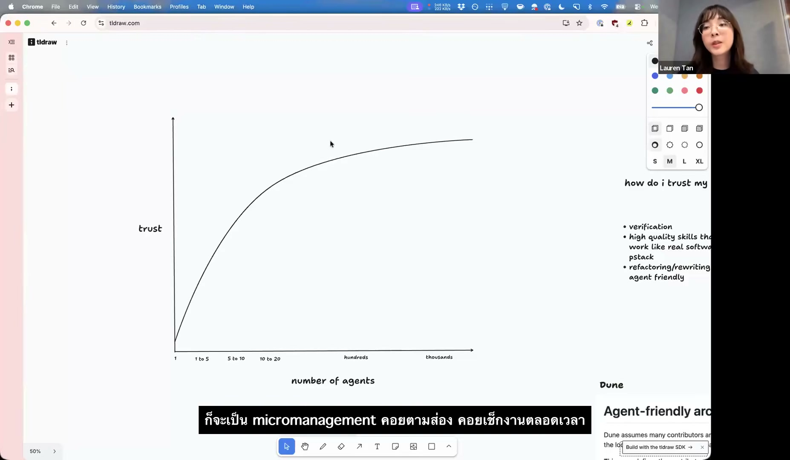
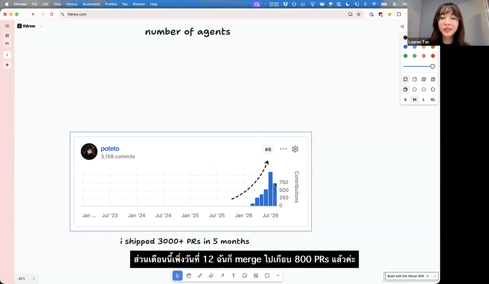
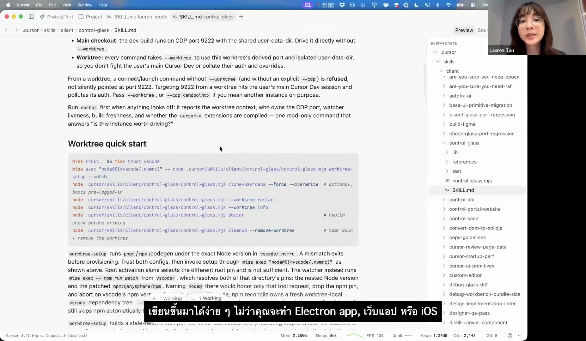
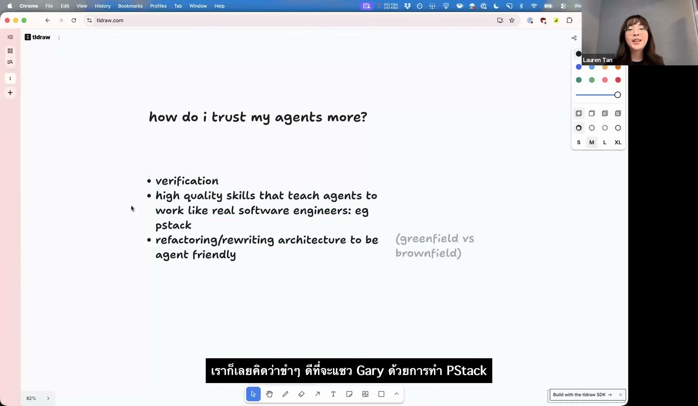
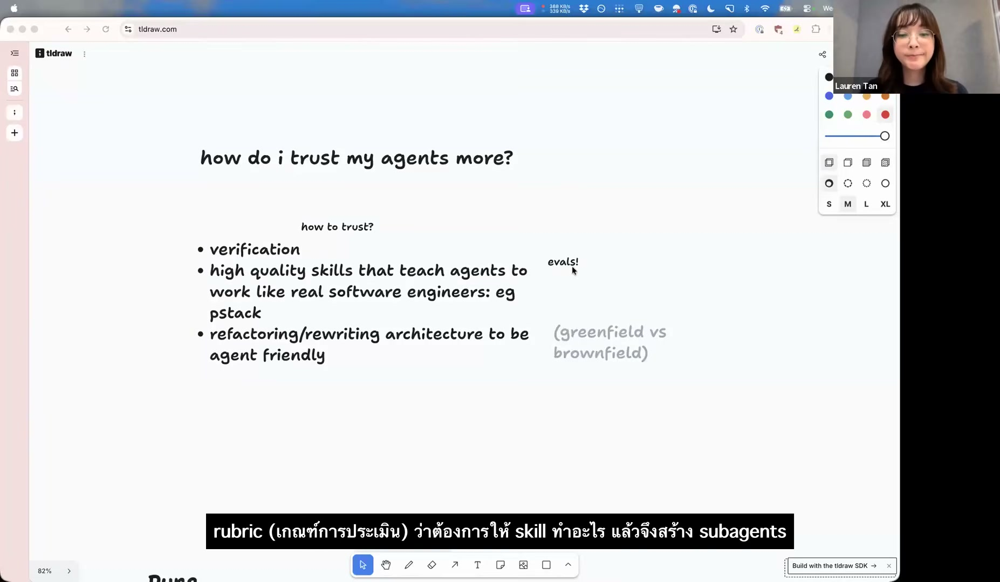
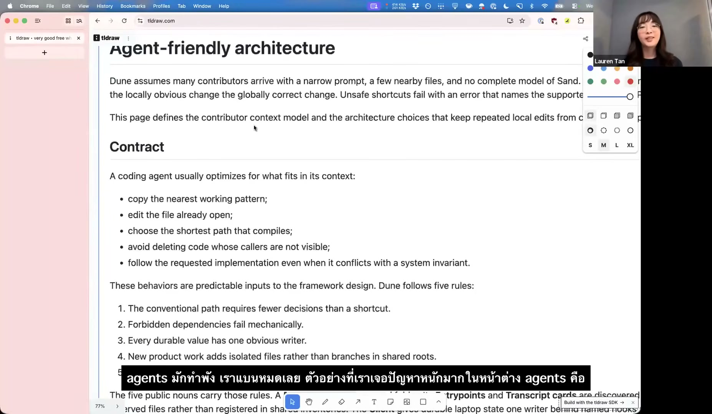
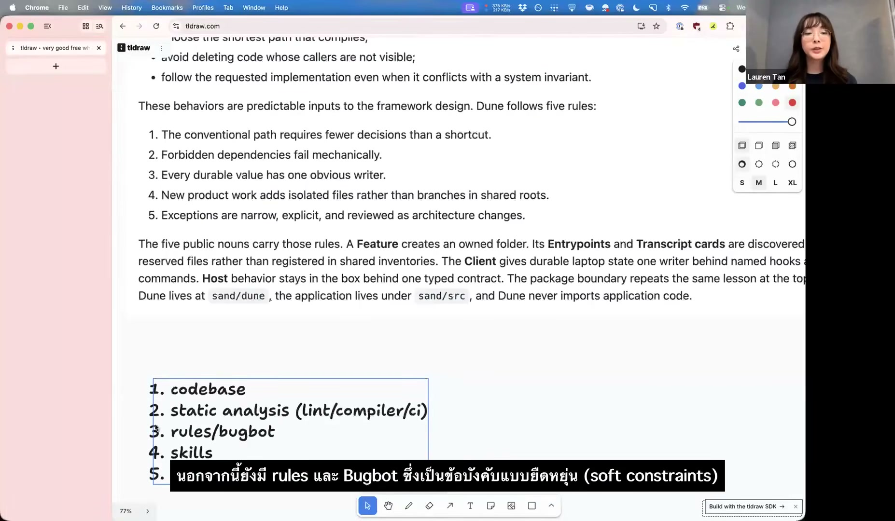

ก่อนเริ่มอ่าน
อย่าเพิ่งเชื่อข้อความบนภาพปก
คลิปนี้เป็นการนำ session ภาษาอังกฤษมาเผยแพร่ใหม่พร้อมคำบรรยายไทย ภาพปกเรียก Lauren ว่า “SpaceX AI Engineer” แต่เธอบอกเองในช่วงเปิดคลิปว่าทำงานที่ Cursor มาได้ประมาณห้าเดือน ก่อนหน้านั้นเธออยู่ทีม React ของ Meta และเคยเป็นทั้ง Tech Lead และ Engineering Manager ที่ Netflix ผมจึงยึดคำแนะนำตัวในคลิป ไม่ยึดข้อความโฆษณาบนภาพปก
เรื่องความแม่นยำของ transcript เนื้อหาด้านล่างแปลจาก YouTube auto-caption ครบทั้ง 1,469 แถว ผมปรับชื่อผลิตภัณฑ์และศัพท์เทคนิคที่เห็นชัด แต่ไม่ได้ตรวจแก้ทีละประโยคเหมือนงานถอดเสียงโดยมนุษย์ ถ้าประโยคไหนสำคัญต่อการตัดสินใจ กด “แสดง English ต้นฉบับ” แล้วเทียบกับคำพูดจริงในวิดีโออีกครั้ง
สรุปแบบสั้นที่สุด
ถ้าเรายังต้องตามตรวจทุกอย่าง Agent ก็ยังช่วยเราได้ไม่มาก
ลองนึกภาพว่า Agent เขียนโค้ดเสร็จแล้ว แต่เรายังต้องเปิดแอปให้ ดูว่าหน้าจอพังตรงไหน ส่ง screenshot กลับไป และคอยอธิบาย error ทุกครั้ง แบบนี้ Agent อาจช่วยให้พิมพ์โค้ดเร็วขึ้น แต่คนยังเป็นคอขวดเหมือนเดิม เปิดพร้อมกันสิบตัวก็ไม่ได้ทำให้งานเดินเร็วขึ้น เพราะสุดท้ายทุกงานต้องมาต่อคิวรอเราเช็ก
สิ่งที่ Lauren ทำคือค่อย ๆ ย้ายงานตรวจเหล่านั้นเข้าไปอยู่ในระบบ เธอทำให้ Agent เปิดและใช้งานแอปได้เอง มีแผนที่บอกว่าฟีเจอร์อยู่ตรงไหน มี Skill ที่สอนวิธีทำงาน และมี eval คอยเช็กว่า Skill ยังใช้ได้อยู่ ถ้าเป็นข้อผิดพลาดที่ไม่ควรเกิดอีก เธอแก้ที่โครงสร้างของ codebase หรือ CI เพื่อให้โค้ดแบบนั้นผ่านเข้ามาไม่ได้ตั้งแต่แรก
- อย่าเพิ่งเพิ่มจำนวน Agent เริ่มจากทำให้ตัวเดียวตรวจงานตัวเองได้ก่อน
- ให้มันลองใช้ของที่มันแก้ test ผ่านไม่ได้แปลว่าผู้ใช้ทำงานได้จริงเสมอไป
- Skill ต้องบอกวิธีทำงาน ระบุขั้นตอนและหลักฐานที่ต้องเก็บให้ชัดกว่าคำสั่งเรื่องบุคลิกหรือบทบาท
- Skill เองก็ต้องมีข้อสอบ ลองกับหลายงานและหลาย Agent เพื่อดูว่าใช้ได้จริงหรือบังเอิญผ่านแค่ครั้งเดียว
- เรื่องที่พลาดซ้ำควรแก้ใน codebase อย่าแก้ด้วย prompt ที่ยาวขึ้นทุกครั้ง
- คิดต้นทุนเป็นเวลาของทั้งทีม token ที่แพงอาจคุ้ม ถ้ามันลดเวลาตรวจงานและลดข้อผิดพลาดได้จริง
ค่อย ๆ เพิ่มความไว้ใจ
อย่าเปิด auto-merge ก่อนที่ระบบจะพิสูจน์ตัวเอง
Lauren ไม่ได้เริ่มจากการปล่อย Agent จำนวนมากให้ทำงานอิสระ เธอเริ่มจากใช้งานใกล้ ๆ ตรวจแทบทุกอย่าง แล้วค่อยแก้เหตุผลที่ทำให้เธอต้องเข้าไปช่วยทีละข้อ หลังจากสะสมเครื่องมือตรวจงานและปรับ codebase อยู่นาน เธอจึงเริ่มปล่อยให้บางงานเปิดและ merge Pull Request ได้เอง

Agent ทำงานเสร็จแล้วรอให้เราเปิดแอปและบอกว่าถูกหรือผิด
มันเปิดแอป ลองใช้งาน อ่าน error และเก็บหลักฐานกลับมาให้เราได้
Skill, eval และ CI ตรวจเรื่องที่ไม่ควรปล่อยให้คนจำเอง
งานที่ตรวจซ้ำและย้อนกลับได้จึงค่อยให้ Agent จัดการเองมากขึ้น

ให้ Agent ตรวจงานตัวเอง
ถ้ามันแก้หน้าจอ มันก็ควรเปิดหน้าจอนั้นดูได้
Agent ที่เห็นแค่ source code ไม่มีทางรู้ว่าปุ่มทับข้อความหรือ flow ใช้งานไม่ได้ Lauren จึงทำ Verification Skill ที่สอนให้มันเปิดแอปในเครื่อง ใช้งานฟีเจอร์ อ่าน console และเก็บภาพกลับมาเอง หลักการนี้ใช้กับ CLI และ desktop app ได้เหมือนกัน หลังแก้เสร็จ Agent ต้องลองทำงานแบบเดียวกับผู้ใช้และแสดงให้เห็นว่าปัญหาหายแล้ว

- ทำให้ปัญหาเกิดซ้ำลองผ่านหน้าจอหรือคำสั่งเดียวกับที่ผู้ใช้เจอ
- หาต้นเหตุอ่าน code, state, log และส่วนที่เชื่อมโยงกัน
- แก้เท่าที่จำเป็นไม่รื้อของที่ไม่เกี่ยวและไม่ฝืน architecture
- ลองใช้อีกครั้งรันแอปแล้วทำขั้นตอนเดิมตั้งแต่ต้น
- เก็บหลักฐานส่งภาพ log หรือผลตรวจที่ reviewer เปิดดูได้
pstack, Skills และ Evals
ถ้าต้องสอนเรื่องเดิมซ้ำ ให้เขียนเป็น Skill
pstack เริ่มจากเรื่องน่ารำคาญที่เกิดซ้ำ Agent ชอบเดาแทนที่จะเปิด code ดูจริง ข้ามขั้นออกแบบ debug แบบจับจุด และบอกว่างานเสร็จทั้งที่ไม่มีหลักฐาน Lauren จึงเขียนวิธีทำงานเหล่านี้เป็น Skill แยกตามงาน เช่น การสืบหาปัญหา การออกแบบ การเขียนโค้ด การ review และการตรวจผล

เธอไม่ได้ถือว่า Skill ใช้ได้เพียงเพราะมันทำงานสำเร็จครั้งหนึ่ง Coordinator จะสร้างเกณฑ์ให้คะแนนแล้วส่งงานเดียวกันให้ sub-agent หลายตัวใน directory แยกกัน ชื่อ directory ยังตั้งใจไม่บอกว่ากำลังถูกทดสอบ เพราะ Agent อาจทำตัวต่างออกไปเมื่อรู้ว่าอยู่ใน eval สิ่งที่เธอต้องการรู้คือ Skill ช่วยได้สม่ำเสมอหรือแค่โชคดีในตัวอย่างแรก

ให้ codebase ช่วยจำแทนทีม
ข้อผิดพลาดที่เกิดซ้ำไม่ควรจบด้วยการเพิ่ม prompt
rules และ Skills มีประโยชน์ แต่ Agent ยังลืมหรืออ่านผิดได้ ถ้าความผิดพลาดแบบเดิมกลับมาอีก Lauren จะถามว่าป้องกันที่ชั้นล่างกว่านี้ได้ไหม บางครั้งคำตอบคือเปลี่ยน API หรือ type บางครั้งต้องเพิ่ม lint rule หรือทำให้ CI ไม่ยอมให้โค้ดแบบนั้น merge

เมื่อทีมแก้ bug หรือพบปัญหาในการ review บทเรียนนั้นจึงไม่ควรอยู่แค่ในหัวของคนที่เจอ Lauren พยายามใส่มันกลับเข้าไปใน codebase เพื่อให้ทั้งคนและ Agent รุ่นถัดไปได้ประโยชน์ วิธีนี้ยังช่วยให้ model ที่ธรรมดากว่าทำงานได้ดีขึ้น เพราะระบบตัดทางเลือกที่ผิดออกไปแล้วส่วนหนึ่ง

แล้วค่า token คุ้มไหม
คำถามที่ถูกไม่ใช่ “ใช้ token เท่าไร” แต่คือ “ประหยัดเวลาคนได้เท่าไร”
ช่วงถามตอบมีคนถามตรง ๆ ว่าการใช้ Agent จำนวนมากสิ้นเปลืองหรือไม่ Lauren มองว่าต้องเทียบค่า token กับเวลาของวิศวกรที่ต้องเขียน ตรวจ และแก้งานเองด้วย ถ้าการปรับ codebase ครั้งเดียวทำให้ Agent รุ่นธรรมดาทำงานได้ดีขึ้น และช่วยให้คนในทีมส่งงานได้โดยไม่เพิ่มภาระ review ตามสัดส่วน ค่าใช้จ่ายนั้นอาจคุ้มในระดับทีม
แต่คลิปนี้ยังไม่มีข้อมูลพอจะบอกว่า auto-merge เหมาะกับทุกบริษัท เราไม่เห็น defect rate ระยะยาว ค่าใช้จ่ายทั้งหมด หรือการทดลองเทียบกับทีมที่ไม่ใช้วิธีนี้ ทางที่สมเหตุสมผลคือเริ่มจากงานที่ย้อนกลับได้ จำกัดสิทธิ์ให้แคบ เก็บหลักฐานทุกครั้ง และวัดทั้งความเร็วกับ bug ที่หลุดถึงผู้ใช้
แผนที่วิดีโอ
หัวข้อหลักตามเวลา
- ประวัติ Lauren: Cursor, Meta React และ Netflix
- Trust curve และการเริ่มจาก Agent จำนวนน้อย
- มนุษย์กลายเป็น verifier และคอขวดอย่างไร
- pstack และการเปลี่ยนวิธีทำงานเป็น Skills
- การ eval Skills ด้วย coordinator และ sub-agents
- สร้าง Verification Skill จาก local application
- Refactor/Rewrite เพื่อ codebase ที่ Agent ใช้ง่าย
- ไม่ต้องอ่านทุกบรรทัดเมื่อ environment ให้หลักฐานได้
- ห้าม pattern ที่ Agent ทำพลาดซ้ำด้วยข้อจำกัด
- Codebase, static analysis, CI, rules และ Bugbot
- Token economics และ trade-off ระดับทีม
- ปิด session และช่องทางถามต่อ
Transcript ภาษาไทยฉบับเต็ม
อ่านต่อได้ตั้งแต่นาทีแรกจนจบคลิป
ผมแบ่งคำพูดเป็นช่วงละประมาณ 30 วินาที เพื่อให้อ่านต่อเนื่องได้โดยไม่กลายเป็นกำแพงข้อความ ทุกช่วงกดกลับไปฟังใน YouTube ได้ทันที ส่วนชื่อผลิตภัณฑ์และศัพท์วิศวกรรมยังคงเป็น English เพื่อรักษาความหมายเดิม
1,469 caption rows · 112 ช่วงอ่าน · ไม่มีช่วงว่าง
สวัสดีทุกคน. ฉันชื่อลอเรน ลอเรน แทน ฉันเดาว่าคงไม่มีใครรู้นามสกุลของฉันมากนัก เอ่อ ฉันเป็นPotetoใน Twitter Uh Poteto สะกดด้วย e ฉันกับเอิ่มอยู่ที่Cursorมาประมาณ 5 เดือนแล้ว ก่อนหน้านี้ฉันอยู่ที่ Meta ซึ่งฉันทำงานในทีม React เอ่อ ทำงานโดยเฉพาะกับคอมไพเลอร์ React ซึ่งสนุกมาก ฉันยังอยู่ในทีมหลัก และมีส่วนร่วมในopen sourceที่นี่และที่นั่น เอ่อ นั่นแหละครับ
Hello everyone. I am Lauren Lauren Tan. I guess not many people know my last name. Uh I am potato on Twitter. Uh potato with spelled with an e. Um and I have been at cursor for about 5 months. Uh previously I was at Meta where I worked on the React team. Uh specifically working on the React compiler uh which was a whole lot of fun. Uh I'm still on the on the core team and and uh contributing to open source here and there. Uh so that that's
ดีจริงๆ ที่พวกเขายังให้ฉันทำอย่างนั้น ก่อนหน้า Meta ฉันอยู่ที่ Netflix ซึ่งฉันเป็นทั้งหัวหน้าฝ่ายเทคโนโลยี และเอ่อ ฉันเปลี่ยนไปเป็นผู้จัดการฝ่ายวิศวกรรมมาประมาณสองปีแล้ว ฉันมีประสบการณ์มากมายระหว่างการจัดการด้านวิศวกรรมกับการเป็นผู้มีส่วนร่วมรายบุคคล เอ่อ และฉันคิดว่ามีบางอย่างที่ฉันสังเกตเห็นจริงๆ ซึ่งค่อนข้างน่าสนใจก็คือ มีความคล้ายคลึงกันมากมายกับการบริหารจัดการ
really nice that they still let me do that. Uh and before Meta, I was at Netflix uh where I was uh both a tech lead and uh I transitioned to be be an engineering manager um for about two years. So I've had a I've have had a lot of experience going between engineering management and being an individual contributor. Uh and I think something I've noticed actually which is quite interesting is that there are so many parallels with you know management
ทักษะและวิธีการชอบการบริหารAgent เอ่อ และนั่นเป็นส่วนสำคัญจริงๆ เกี่ยวกับสิ่งที่ฉันอยากคุยกับคุณและคนอื่นๆ ในวันนี้ เอิ่ม แต่ใช่แล้ว นั่นคือฉันเอง ฉันมีบางอย่างที่เหมือนกับสไลด์ที่เบามาก แต่เอ่อ มันจะไม่ใช่แค่การเดินเล่นเท่านั้น ให้ฉันแชร์หน้าจอของฉันและหวังว่าฉันจะไม่รั่วไหลอะไร เอ่อไม่ ฉันต้องอนุญาต
skills and how to like manage agents. Uh and that's actually a big part about what I wanted to chat with you and everybody else about today. Um but yeah that's that's me. Uh I do have some like very light slides but uh it's not going to be uh just rambling. So let me just share my screen and hope that I don't leak anything. Uh oh no, I need to allow permissions.
>> ไม่ต้องกังวล โอ้ ใช้เวลาของคุณ >> มีปัญหาด้านเทคโนโลยีอยู่เสมอ เอ่อให้เวลาฉันหนึ่งวินาทีเพื่อเข้าร่วมอีกครั้ง >> ใช่แล้ว ไปเลย ฉันเห็นพวกคุณหลายคนรู้จักลอเรนจากการดูแชทที่นี่แล้ว อืม ใช่แล้ว มันน่าตื่นเต้นมากที่ได้มีโอกาสพูดคุยกับเธอ และอ่านผลงานล่าสุดของเธอบางส่วน อย่างที่พวกคุณได้ยินมา ประสบการณ์ล่าสุดมากมายตั้งแต่ Netflix ไปจนถึง Meta และตอนนี้ก็มาถึงที่ Cursor เอ่อ เราจะมาคุยเรื่อง Grockbot กันสักหน่อย งั้นก็คงเป็น.
>> No worries. Oh, take your time. >> There's always tech tech trouble. Uh give me one second to rejoin. >> Yeah, go for it. I see many of you already know Lauren from the looks of the chat here. Um, so yeah, it's exciting to to get a chance to chat with her uh and and go through some of her her recent work. As you guys heard, you know, a lot of recent experience from from Netflix to to Meta and then now over at Cursor. Uh we're going to chat a little bit about Grockbot as well. So uh that'll be
น่าตื่นเต้น. ฉันไม่รู้ว่าพวกคุณเห็นว่ามันเป็นเวอร์ชั่นล่าสุดหรือเปล่า ฉันคิดว่าจริงๆ แล้วอาจจะเป็นเมื่อวานหรือวันก่อน เอ่อ จากทีมCursor ซึ่งก็ประมาณว่า เรามาเรียกมันว่าAgentสำหรับทุกคนกันดีกว่า คุณสามารถลองดูได้ถ้าคุณต้องการและเรียนรู้เพิ่มเติมอีกเล็กน้อยเกี่ยวกับผลิตภัณฑ์ แต่ใช่แล้ว เราจะสำรวจสิ่งนั้นเล็กน้อยในวันนี้เช่นกัน ถูกต้องเลย ยินดีต้อนรับกลับมา
exciting. I don't know if you guys saw that was a recent release I think literally maybe yesterday or the day before uh from the cursor team which is kind of like um let's call it like agents for everyone. You can go check it out if you want and learn a little bit more about the product but um but yeah we'll we'll explore that a little bit today as well. All righty. Welcome back.
และลอเรน คุณก็แค่ปิดเสียงตรงนั้น ถ้าคุณอยากเลิกปิดเสียงถ้าคุณกำลังแชทอยู่ >> ใช่ ขอโทษ >> ไม่ต้องกังวล >> นี่มันปี 2026 แล้ว ยังใช้ Zoom ไม่เป็นเลย [เสียงหัวเราะ] >> แค่นี้ก็ดีแล้ว >> เอ่อ โอเค. ฉันคิดว่าคุณจะเห็นหน้าจอของฉัน >> ใช่ ใช่แล้ว เราสบายดี อืม >> ใช่แล้ว วันนี้ ใช่แล้ว ฉันคิดว่าฉันคิดว่าธีมหลักสำหรับฉันเพราะฉันใช้Agentในการเขียนโค้ด และฉันแน่ใจว่าหลาย ๆ คนก็เคยมีประสบการณ์แบบเดียวกันเช่นกัน คุณจะเชื่อใจได้อย่างไร โดยเฉพาะถ้าคุณเป็นวิศวกรที่เขียนโค้ดมาเป็นเวลานาน
And Lauren, you're just on mute there if uh you want to hop off of mute if you're chatting. >> Yeah, sorry. >> No worries. >> It's 2026 and I still don't know how to use Zoom. [laughter] >> That's all good. >> Uh okay. So, I assume you can see my screen. >> Yes. Yeah, we're good. Um, >> so yeah, today, yeah, I think I think the big theme for me as I've been using agents to write code, and I'm sure a lot of you have had the same experience as well, is how do you trust it? You know, especially if you are an engineer that's been writing code for a very long time,
คุณมีความคิดเห็นและบทเรียนมากมายที่คุณได้เรียนรู้เกี่ยวกับการทำงานด้านวิศวกรรมที่ดี และเมื่อคุณเห็นเจ้าหน้าที่เพิ่งบินไป และคาดเดา เห็นภาพหลอน ระบุอย่างมั่นใจว่าพวกเขาพบปืนสูบบุหรี่ เป็นครั้งที่ร้อย แต่จริงๆ แล้วมันไม่ใช่ปัญหาที่แท้จริง คุณสูญเสียความไว้วางใจไปมาก และเมื่อคุณสูญเสียโดยที่คุณไม่ไว้วางใจAgentของคุณมากนัก ฉันรู้สึกว่าคุณไม่สามารถได้รับประโยชน์สูงสุดจากพวกเขาได้ และสำหรับผมแล้ว
you have a lot of opinions and lessons that you've learned about doing good engineering. And when you see agents just, you know, winging it and, you know, guessing, hallucinating, uh, you know, confidently stating that they found the smoking gun, uh, for the hundth time, uh, but it's actually not the real problem. You lose a lot of trust. And when you lose when you don't have much trust in your agents, I feel like you you really can't get the most out of them. And for me, the
ขนานกันก็เหมือนกับการบริหาร เอ่อ ถ้าฉันเป็นผู้จัดการ ผู้จัดการฝ่ายวิศวกรรมของทีม และฉันมีพวกคุณหลายคนรู้ว่าฉันมีทีมวิศวกรอยู่ในทีมของฉัน และฉันไม่ไว้ใจพวกเขา ดังนั้นโหมดการทำงานที่ฉันกำลังจะเป็นจะเหมือนกับการจัดการระดับย่อย ฉันจะต้องใช้เวลามากในการดูรายงานของฉันและตรวจสอบว่าพวกเขากำลังทำงานได้ดี คุณรู้ว่าพวกเขาไม่ได้ส่งข้อบกพร่องไปยังการผลิต ดังนั้นฉันจึงวาดแผนภูมินี้เพราะเอ่อ มันไม่ใช่
parallel is like with management. Uh so if I'm an a manager an engineering manager of a team and I have a bunch of you know I have a team of engineers uh on my team and I don't trust them then the mode of operation I'm going to be in is going to be like micromanagement right I'll have to spend a lot of time looking over my reports shoulders and checking that they're doing their work well you know that they're not shipping bugs to production and so I drew this chart cuz uh it's not
มันไม่ใช่แผนภูมิที่เป็นวิทยาศาสตร์มากนัก แต่นี่คือวิธีที่ฉันจินตนาการถึงตัวเองและการเดินทางของฉันผ่านการใช้Agent คุณรู้ไหมว่ากรอไปข้างหน้าหรือถอยหลังไปข้างหน้า uh หรือกรอถอยหลัง uh ย้อนกลับอย่างรวดเร็วประมาณหนึ่งปีหรือประมาณนั้นเมื่อคุณรู้ว่าไม่มีใครหรือมีคนไม่มากที่ใช้Agentในการเขียนโค้ด เอ่อ ฉันคิดว่าคุณ เอ่อ คุณรู้ไหมว่าเข้าสู่โหมดนี้โดยที่คุณอยู่ในวงวนหนักมากกับหนึ่งหรือ
it's not a very scientific chart but like this is how I imagine myself and my journey through using agents. So you know like fast forward or back forward uh or fast back uh fast backwards like a year or so when you know nobody was or not many people were using agents to code. Uh I think you uh you know get into this mode where you are in very heavily in the loop with one or
หลายๆ คนเหมือนกับเจ้าหน้าที่เพียงไม่กี่คน และคุณจะพบว่าตัวเองก็แค่พยายามทำความเข้าใจว่าเจ้าหน้าที่ของคุณกำลังทำอะไรอยู่ และคุณก็มีส่วนเกี่ยวข้องอย่างมาก คุณกำลังรับชมทุกเอาต์พุต คุณกำลังนั่งอยู่ตรงนั้นเพื่อกระตุ้นให้คุณ และคุณไม่สามารถขนานกันเกินกว่านั้นได้ เพราะคุณไม่มีอีกครั้ง คุณไม่น่าเชื่อถือขนาดนั้น คุณไม่สามารถไปที่Agent 100 คนได้ เอ่อ เหมือนวางไข่Agent 100 คน เมื่อคุณไม่ไว้วางใจผลลัพธ์ของAgentหนึ่งคนด้วยซ้ำ ดังนั้นในช่วง 5 เดือนที่ผ่านมา ฉันรู้สึกเหมือนว่า
several like a handful of agents and you find yourself just constantly fig uh you know trying to understand what your agents are doing uh and you're very very in loop. You're watching every single output. you are sitting there prompting um and you really can't parallelize beyond that because you don't again you don't have that trust right you can't go to a 100 agents uh like spawn 100 agents when you don't even trust the output of one agent so over the past 5 months I feel like
ฉันสามารถ uh ขึ้นไปสู่เส้นโค้งความไว้วางใจนี้จริงๆ และตอนนี้ฉันมาถึงจุดที่ เอ่อ จริง ๆ แล้วฉันฟังดูน่ากลัวที่จะพูดแบบนี้และมันทำให้ฉันดูเหมือนศิลปินที่ไร้เหตุผล แต่ฉันสัญญาว่าจะไม่ แต่จริง ๆ แล้วฉันมีAgentของฉันแล้วตอนนี้กำลังรวม PR โดยอัตโนมัติสำหรับฉัน เอ่อ ซึ่งพูดแปลกๆ นะ แต่เหมือนฉันตื่นมาวันนี้และมี PR ราวๆ 20 รายการมาถึงแล้ว และฉันก็ตรวจสอบพวกเขาในรัฐเมนเหมือนว่าพวกเขาได้ลงจอดแล้วและทำได้ดี เอ่อดังนั้น
I've really been able to uh like ascend this trust curve and now I'm at the point where uh I actually have this sounds kind of scary to say this and it makes me sound like a slop artist, but I I promise I'm not, but I actually have my agents now um automerging PRs for me. Uh which is like a wild thing to say, but um like I woke up today and there were like 20 PRs landed and I just reviewed them on Maine like they were already landed and they were good. Uh so
ฉันมาถึงจุดนั้นได้อย่างไร โดยพื้นฐานแล้วคือสิ่งที่ฉันอยากพูดถึงในวันนี้ เอ่อ และขอย้ำอีกครั้งว่าใช่ อย่าลังเลที่จะเข้าร่วมหากคุณมีคำถามเกี่ยวกับคอลิน อืม แต่เอ่อ ใช่แล้ว แน่นอนว่าฉันต้องแสดงแผนภูมินี้ เอ่อ โดยที่ เอ่อ ไม่ไว้ใจคนที่ร้องขอให้ควบคุมคอมพิวเตอร์ของฉัน เอ่อคงไม่ทำแบบนั้นหรอก เอ่อ แต่ใช่แล้ว ดังนั้นแผนภูมินี้ ฉันคิดว่า ฉัน ฉันไม่แชร์แผนภูมินี้
how did I get to that point is basically what I wanted to talk about today. Uh and again like yeah feel free to jump in if you have questions Colin. Um but uh oh yeah of course I got to show this this chart. Uh where uh no do not trust to someone requested to control my computer. Uh probably won't do that. Uh but yeah, so this chart I think I I I'm sharing this chart not to
เหมือนกับการดิ้น แต่การแสดงเหมือนการเดินทาง เพื่อให้คุณมองเห็นเส้นโค้งแบบนั้น เหมือนกับว่ามันตรงกันข้ามกับการมีส่วนร่วมที่ผมสามารถลงที่Cursorได้ ดังนั้นฉันจึงเข้าร่วมเมื่อห้าเดือนที่แล้วและห้าเดือนที่แล้วเหมือนฉันรู้ว่าเดือนแรกของฉันฉันไม่ค่อยมีประสิทธิผลเพราะฉันรู้สึกแย่มาก คุณก็รู้ว่าฉันกำลังเรียนรู้codebaseไม่รู้ว่าเกิดอะไรขึ้น และเมื่อฉันมีความมั่นใจมากขึ้นในตัวAgentของฉัน เอ่อ ฉันสามารถเพิ่มประสิทธิภาพการทำงานของฉันได้จริงๆ เอ่อ และอีกครั้งเหมือนใช่
kind of like flex but to kind of show like the journey like so you can see like the curve like it sort of like inversely matches the contributions I've been able to land at cursor. So I joined five months ago and five months ago like I you know my first month I was like not very productive because I was ob you know I was learning the codebase didn't know what the heck was going on and as I got more confident in in my agents uh I've really been able to kind of ramp up my productivity uh and again like yeah
เหมือนเมื่อเดือนที่แล้ว ฉันส่ง PR นับพันรายการซึ่งไร้สาระ เอ่อ แล้วเดือนนี้เราก็เพิ่งวันที่ 12 เท่านั้น ฉันมี PR เกือบ 800 คนแล้ว เอ่อ ความเร็วนั้นสูงมากอย่างแน่นอน และคุณล่ะ คุณคงสงสัยอย่างแน่นอนว่าโค้ดนี้ดีจริง ๆ มากแค่ไหน อืม และฉันคิดว่าใช่ เป็นคำถามที่ยุติธรรมอย่างแน่นอน อืม แต่เอ่อ ใช่ ฉันคิดว่า ฉันคิดว่าถ้าคุณ
like last month I shipped a thousand PRs which is ridiculous. Uh, and then this month we're only on the 12th. I'm already at like almost 800 PRs landed. Uh, so the velocity is definitely high and you you I'm sure a lot of you will definitely be questioning like how how much of this code is actually good. Um, and I think yeah, like that's definitely fair to question. Um, but uh, yeah, I think I think if you
ตั้งค่าAgentของคุณให้ดี คุณจะไปถึงระดับที่ใกล้เคียงกันอย่างแน่นอน อืม ผมจะพูดถึงวิธีที่เราทำแบบนั้น สำหรับฉัน ฉันคิดว่าฉันอยากรู้อยากเห็นเหมือนที่ฉันเดาจากประสบการณ์ของคุณเช่นกัน แต่สำหรับฉัน ฉันคิดว่าทักษะที่สำคัญที่สุดที่คุณควรมีในกล่องเครื่องมือเมื่อคุณทำงานกับAgentคือการตรวจสอบ เอ่อ และจากการยืนยัน ฉันหมายถึงความสามารถสำหรับAgentในการดำเนินการจริง
set up your agents well, you can definitely get to a very similar level. Um, and so I'm going to talk about how we do that. Uh so for me I think I'm curious like I guess call in your experience as well but uh for me I think the most important skill that you should have in your toolbox when you work with agents is verification. Uh and by verification I mean the ability for an agent to actually run the
โค้ด เอ่อ หรือติดตาม CPU หรือสแน็ปช็อตฮีป หรือ เอ่อ คุณรู้ไหมว่าให้เปิดโปรแกรมจำลอง iOS อะไรก็ตามที่คุณรู้ว่าแอปพลิเคชันของคุณถูกเปิดเผยต่อผู้ใช้ของคุณอย่างไร มันสามารถทำสิ่งเดียวกันและรันได้จริงและทดสอบและยืนยันว่ามันใช้งานไม่ได้ เพราะนั่นคือสิ่งที่ปิดลูปจริงๆ เอ่อ มันไม่ได้รับประกันว่าAgentของคุณจะเขียนโค้ดที่ดี แต่อย่างน้อยก็ช่วยให้พวกเขาเขียนโค้ดที่ถูกต้อง เอ่อ ซึ่ง
code uh or take CPU traces or heap snapshots or uh you know open an iOS simulator whatever you know however your application is exposed to your users it can do the same thing and uh run it for real and actually test and verify it don't work because that's the thing that really closes the loop. uh it doesn't guarantee your agent writes good code uh but it allows them to at least write correct code uh which
ถือเป็นก้าวสำคัญในการไว้วางใจAgentของคุณได้ อืม ฉันจะแบ่งปันตัวอย่างหนึ่งที่เรามี uh อยู่ในCursor อุ๊ย ให้ฉันเปิดสิ่งนี้ที่ไหน ทำให้สิ่งนี้ทำให้ฉันเต็มหน้าจอ ไปแล้ว.
is a big a really big step forward for being able to trust your agent. Um I will I can share one example that we have uh within cursor. Uh oops where let me open this make this uh make me full screen. There you go.
ดังนั้นสำหรับหน้าต่างAgentของCursor เอ่อ นี่เป็นเรื่องราวที่น่าสนใจจริงๆ แต่เมื่อฉันเข้าร่วมCursorเมื่อห้าเดือนที่แล้ว เอ่อ จริงๆ แล้วพวกเขาควรจะเข้าร่วมทีมอื่นที่ฉันควรจะเข้าร่วมเหมือนกับทีมAgentระบบคลาวด์ เอ่อ แต่แล้วเนื่องจากฉันมีประสบการณ์มากมายในการทำงานเกี่ยวกับการตอบสนอง และหน้าต่างAgentเป็นแอปพลิเคชันโต้ตอบ เอ่อ ฉัน เอ่อ [พูดจาหยาบคาย] ฉันถูกขอให้ช่วยโดยพื้นฐานเกี่ยวกับการทำงานของหน้าต่างAgent เอ่อแต่เอ่อ.
Uh so for the for cursor's agent window uh so this is actually an interesting story but uh when I joined cursor five months ago uh they're actually uh well I was supposed to join a different team I was supposed to join like the cloud agents team uh but then since I have a lot of experience working on react and agents window is a react application uh I was uh [snorts] I was asked to basically help out with uh the agent window work. Uh but um
ทักษะแบบเดียวกันนี้ช่วยฉันได้ไม่มากนัก ฉันเพิ่งพบว่าตัวเองโอเค หน้าต่างAgentกำลังจะเปิดตัวในอีกประมาณหนึ่งสัปดาห์ใช่ไหม เรามีกำหนดเวลาที่แน่นมาก และเอ่อ คุณก็รู้ว่าฉันกำลังนั่งอยู่ตรงนั้นแบบโอเค ฉันจะเปิดเครื่องมือสำหรับการพัฒนา Chrome ให้กับผู้แสดง และก็เหมือนกับลองติดตามดูด้วยตัวเอง และพยายามทำความเข้าใจกับกราฟเปลวไฟนี้ และโปรดจำไว้ว่าฉันก็เหมือนกับในสัปดาห์แรกของฉัน ดังนั้นฉันจึงไม่รู้ว่าฉันกำลังดูอะไรอยู่ ไม่รู้ว่าคุณรู้มาจากไหน ฉันหมายถึงฉันมีความคิดบางอย่าง แต่คุณรู้ว่าcodebaseนั้นคืออะไร
there wasn't really a lot of like skills to help me. So I just found myself like okay uh agent window is going to launch in like a week, right? We have a really tight deadline and um there was uh you know I was just sitting there like okay I'm going to open up the performant the the Chrome dev tools and just like take a trace look at it myself and try to make sense of this flame graph. And keep in mind I was just like in my first week so I had no idea what I was looking at. No idea where you know I mean I had some idea but you know the codebase was
สดชื่นสำหรับฉันจริงๆ เอ่อ และฉันก็ตระหนักได้ว่าAgentของฉันไม่รู้ว่า คุณก็รู้เหมือนกับว่าฉันจะถ่ายภาพหน้าจอของตัวอย่าง ฉันจะดาวน์โหลดการติดตามหรือส่งไปให้มัน และมันก็เหมือนกับว่า ใช่ มันดูเหมือนแบบนี้ คุณก็รู้ เอ่อ และมันอยากจะระบุอย่างมั่นใจว่ามันเป็นสิ่งนี้ จากนั้นฉันก็พยายามแก้ไข และปรากฏว่านั่นไม่ใช่ของจริง นี่เป็นกระบวนการที่ช้ามากและหากคุณเคยทำผลงานแบบเดียวกันด้วยตัวเองหรือคุณรู้แม้กระทั่งการพัฒนากับAgentที่คุณไม่มีทักษะในการตรวจสอบยืนยัน
completely fresh to me. Uh and I realized like my agent had no idea either you know like I would take a screenshot of the trailer I would download trace or send it to it and it be like yeah it kind of looks like this you know uh and it would like confidently state like it's this thing and then I try to fix that and turns out that's not the actual thing. So this was a very very slow process and if you've ever done any like performance work yourself or you know just even development with an agent where you don't have a verification skill you are
ผู้ตรวจสอบความถูกต้อง คุณเป็นคอขวด คุณบอกAgentของคุณให้ทำอะไรบางอย่าง จากนั้นมันก็ดับไปและเขียนโค้ด จากนั้นคุณเปิดขึ้นมา คุณรู้ว่ามีการสร้าง dev ในพื้นที่ แล้วคุณก็เริ่มพูดว่า โอ้ คุณรู้ไหมว่าไม่ได้ผล จากนั้นคุณต้องคัดลอกหน้าจอวาง เอ่อ คุณรู้ภาพหน้าจอหรือข้อผิดพลาดของconsole หรืออะไรก็ตาม เอ่อ แล้วAgentของคุณอย่างช้าๆ แบบว่า เอ่อ คุณรู้ทำงานกับสิ่งนั้น แล้วพยายามทำความเข้าใจมันและแก้ไขสิ่งนั้น แต่แล้วคุณก็วนเวียนอยู่ตลอดเวลาและเป็น คอขวด เลยไม่มีจริงๆ
the verifier right you you're the bottleneck you you you tell your agent to do something and then it goes off and write some code then you open up your you know local dev build and then you start to say oh you know doesn't work then you got to copy paste screen uh you know screenshots or console errors or whatever uh and then your agent like slowly kind of like uh you know works with that and then tries to understand it and um fix the thing but then you're constantly just in the loop and and being a bottleneck. So there's really no
วิธีขนาน ดังนั้นทักษะกระจกควบคุมจึงเหมือนกับหนึ่งในทักษะแรกๆ ที่ฉันสร้างขึ้นสำหรับCursor เอ่อ และ glass ก็คือชื่อรหัสสำหรับหน้าต่างAgentที่เราใช้ภายใน แต่มันเป็นเพียงCursor ฉันเดานะ อืม และทักษะนี้ เอ่อ ฉันเดาว่าโค้ดนั้นไม่ได้น่าสนใจมากนัก Agentของคุณสามารถสร้างให้คุณได้อย่างง่ายดาย เอ่อ แล้วถ้าคุณกำลังสร้างแอพอิเล็กตรอน หรือเว็บแอพ หรือแม้แต่แอพพลิเคชั่น iOS เอ่อ
way to parallelize. So the control glass skill is like one of the first skills I built uh for cursor. Uh and glass by the way is the code name for agents window that we use internally but it's just cursor I guess. Um, and so this skill uh is I guess the the the code itself is not super interesting. Your agent can very easily make one for you. uh where if if you're building an electron app or a web app or even iOS uh applications uh
คุณสามารถสอนAgentของคุณถึงวิธีใช้ เช่น โปรโตคอลเครื่องมือ dev ของ Chrome หรือผ่านทาง Apple ก็มียูทิลิตี้บางอย่างเช่นกันสำหรับการรันโปรแกรมจำลองและติดตามและควบคุมการควบคุมทางโปรแกรมเช่นกัน เอ่อ มันมีประโยชน์จริงๆ เอ่อ แต่สิ่งหนึ่งที่ฉันอยากจะพูดถึงจริงๆ ก็คือ เอ่อ สิ่งนี้ เอ่อ การอ่านของฉันอยู่ที่ไหน? เอ่อ ทักษะนี้มาพร้อมกับความพิเศษเฉพาะตัวนี้
you can teach your agent how to use like the chrome dev tools protocol or through uh Apple has some utilities as well for running the simulator and taking traces and controlling programmatic control as well. Uh so that's really useful. Uh but one thing I actually want to talk about is uh the this thing uh where is the read me? Uh so this skill comes with this very unique
คุณลักษณะที่เรียกว่าหรือไม่มีคุณลักษณะ เอ่อ ไฟล์เฉพาะที่เรียกว่าแผนผังคุณลักษณะ เรื่องราวก็เหมือนกับว่าฉันสร้างทักษะนี้ขึ้นมา และตอนนี้เจ้าหน้าที่ก็สามารถเรียกใช้หน้าต่างAgentและติดตามร่องรอยได้จริงๆ เอ่อ แต่ไม่รู้ว่าหน้าต่างเจ้าหน้าที่คืออะไร เอิ่ม คุณคงรู้ว่ามีคนพูดว่า "โอ้ แถบด้านข้างซ้ายเหมือนแล็คกี้หรืออะไรประมาณนั้น หรือคุณรู้ว่าทางด้านขวาแท็บ PR ไม่ทำงาน
feature called or not feature uh unique file called a feature map. And so the story then is like I built this skill and so now the agent was able to uh actually run the agent window and take traces and whatnot. Uh but it had no idea what what the agents window was. So um you know like someone would say like oh the the left sidebar is like laggy or something like that or you know the right side the the PR tab is not working
และเจ้าหน้าที่ก็เหมือนกับการโบกมือไปมา มันจะใช้เวลามากในการพยายามค้นหาโค้ดและคุณรู้ไหมว่าฟีเจอร์นี้อยู่ที่ไหน? ฉันจะเข้าถึงมันบน UI ได้อย่างไร ซึ่งโดยพื้นฐานแล้วมันไร้ประโยชน์โดยสิ้นเชิง คุณก็รู้เหมือนกับว่าเราจะใช้งานทักษะในพื้นที่ และคุณก็รู้ว่ามันจะสร้าง build dev แต่แล้วมันก็ปั่นป่วนเหมือนกับว่าฉันแค่พยายามคลิกที่นี่ มันจะไม่รู้ว่าจะเข้าถึงสิ่งต่าง ๆ ได้อย่างไร และมันเป็นประสบการณ์ที่แย่มาก เอ่อ กำลังใส่ลูกศรอยู่เลย
and the agent would just be like kind of flailing around. It would spend a lot of time trying to like look up the code and you know where is this feature? How do I actually get to it on the UI which made it basically completely useless. Uh you know like we would I would run the skill locally and you know it would spawn a dev build uh but then it' just be churning like I just try to click here it wouldn't know how to get to things um and it was just an awful experience. Uh so is putting arrows on
หน้าจอของฉัน เอิ่ม ใช่แล้ว แผนที่ฟีเจอร์นี้มีประโยชน์จริงๆ เพราะมันสอนAgentถึงวิธีเข้าถึงฟีเจอร์ทั้งหมดที่คุณมี อืม และใน PAC ซึ่งเป็นpluginที่ฉันสร้าง ถ้าคุณค้นหาCursor PAC บน Google คุณจะพบมัน เอ่อ แต่มีทักษะในการตรวจสอบการสร้างในpluginนั้นซึ่งจริงๆ แล้วมันช่วยให้คุณตั้งค่าบางอย่างเช่นนี้สำหรับตัวคุณเอง อืม รวมถึงแผนที่ฟีเจอร์ด้วย ดังนั้นมัน
my screen. Um so uh yeah this this feature map has been really useful uh because it teaches the agent how to get to all of the features that you have. Um, and in PAC, the plugin that I I've made, uh, if you search for PAC cursor on Google, you you'll find it. Uh, but there is a create verification skill in that plugin where it actually helps you set up something like this for yourself. Um, including the feature map. So, it
จะสำรวจโค้ดจริง ๆ และสร้างแผนผังฟีเจอร์เริ่มต้นนี้ที่จะบอกAgentของคุณถึงวิธีเข้าถึงฟีเจอร์ต่าง ๆ ทั้งหมดที่คุณมี เอ่อ และนี่ทรงพลังมาก เพราะตอนนี้เหมือนกับที่คุณมีรายงานผู้ใช้ที่เข้ามา คุณสามารถแมปได้จริงๆ เหมือนรายงานที่คลุมเครือ หรือแม้แต่ภาพหน้าจอ ดังนั้นเราจึงมีสิ่งนี้อยู่ในCursor โดยที่ เอ่อ เรามีช่องทางที่ไม่ค่อยดีนัก คุณคงรู้ว่ามีคนจำนวนมากให้ข้อเสนอแนะเกี่ยวกับหน้าต่างAgentและร็อคบอท และอื่นๆ อีกมากมาย เอ่อและ
will actually explore the code and build up this initial feature map that tells your agent how to get to all of the different features that you have. Uh and this is extremely powerful because now like you have these user reports that come in uh you you can actually map even like a vague report or even a screenshot. So we have this uh internally at cursor where uh we have a slack channel with you know lots of people giving us feedback on the agents window and rockbot and whatnot. Uh, and
บ่อยครั้งที่รายงานมีคุณภาพต่ำมาก เช่น คุณภาพต่ำมาก เช่น มีคนใส่ไว้ บ่อยครั้งเราได้รับภาพหน้าจอเช่นนี้ แล้วมีคนพูดว่า เครื่องหมายคำถาม เครื่องหมายคำถาม เครื่องหมายคำถาม เช่น นี่คืออะไร และคุณรู้ไหมว่าหากไม่มีสิ่งนี้ Agentของคุณก็เหมือนกับว่าฉันไม่มีเบาะแสที่ถูกต้อง แต่ด้วยแผนที่คุณลักษณะเช่นนี้ มันมีบริบทและความเข้าใจที่มากขึ้นเกี่ยวกับวิธีการนำทางไปยังคุณลักษณะต่างๆ ทั้งหมด เอ่อ เหมือนอย่างที่คุณรู้ ตัวอย่าง เช่น ฉันเดาว่าแถบด้านข้างเหมือนกับ แถบด้านข้างคืออะไร เอ่อ คุณ
often times the report is very bad like very low quality like someone just put very often we get like a screenshot like and then someone just says question mark question mark question mark like what is this and you know like the without this your agent is like I have no clue right but with a feature map like this it has a lot more context and understanding of how to actually navigate how to get to all the different features. Uh so like you know example like I guess like the sidebar like what is the sidebar uh you
รู้เหมือนฟีเจอร์ย่อยต่างๆ ทั้งหมดที่มีอยู่ในนั้น เอิ่ม เหมือนจากมุมมองของผู้ใช้ ฉันจะเข้าถึงมันได้อย่างไร แป้นพิมพ์ลัดต่างๆ เอ่อ เหมือนกับที่คุณเรียกมันว่าองค์ประกอบ DOM หรือใช่ เช่นแอตทริบิวต์ที่คุณใช้ในการเลือกสิ่งต่างๆ ผ่าน CDP เอ่อ ล้วนอยู่ที่นั่นแล้ว เอ่อ อีกครั้ง ใช่ มันเหมือนกับว่ามันทรงพลังจริงๆ สำหรับAgent >> เอ่อ และชิ้นส่วนที่จัดส่ง เอ่อ ที่สร้าง
know like all the different sub features that are present in it um like from the user point of view here's where how do I get to it all the different keyboard shortcuts uh even like the the what do you call it the DOM elements or yeah like the attributes that you use for selecting things through the CDP uh are all there. So uh again yeah this is like really really powerful uh for for agents >> uh and a piece that ships uh that create
ทักษะในการตรวจสอบ แต่ยังรักษาทักษะในการตรวจสอบ ดังนั้นคุณจึงสามารถอัปเดตข้อมูลนี้ได้ >> เจ๋ง. ใช่ ฉันแค่จะถามว่าคุณสร้างมันขึ้นมาได้อย่างไร คุณช่วยแชร์ข้อมูลเพิ่มเติมอีกหน่อยเกี่ยวกับกระบวนการนั้นในบริบทของ Pstack และบางที Pstack มีไว้สำหรับคนที่ไม่คุ้นเคยหรือเปล่า? ใช่. Pstack ค่อนข้างน่าสนใจเพราะว่าอย่างแรกเลย ชื่อนี้ดูค่อนข้างจะไร้สาระ เช่นกอง P และ P ก็เหมือนกับกองPotetoPotetoเพราะฉัน เอ่อ เอ่อ มันสวยนะ
verification skill but also a maintain verification skill uh so you can keep this up to date. >> Cool. Yeah, I was just going to ask how you created that. So do you mind sharing a little bit more about um that that process in the context of Pstack and maybe just what Pstack is for the folks who aren't familiar? Yeah. So, Pstack is pretty interesting because uh well, first of all, the name is kind of goofy. like the P the P and P stack is like potato potato stack because I um so uh uh there is a pretty
เอ่อ บุคคลที่มีชื่อเสียง Gary Tan ซึ่งเป็น CEO ของ Y Combinator และเขาคิดpluginนี้ขึ้นมาชื่อ Gstack เอ่อ Gary Stack และตลกดีที่เราแชร์นามสกุลว่าเราไม่มีความสัมพันธ์กัน เอ่อ แต่ฉันคิดว่ามันคงตลกดีถ้าคุณรู้ว่าแกรี่ล้อเลียน Gary และทำให้ Pstack เป็นpluginเวอร์ชันของฉัน เอ่อ แต่ลองปรับแต่งให้เข้ากับชุดปฏิบัติทางวิศวกรรม p ของฉันเอง เอ่อ แต่จริงๆ แล้วฉันไม่เคยออกเดินทางเลย
uh famous person Gary Tan who is the CEO of Y Combinator and he's come up with this plugin called Gstack uh Gary Stack and uh funnily enough we share the last name we have no relations uh but I thought it would be funny to kind of you know poke fun at Gary and make Pstack my version of of of of his plugin. Uh but kind of tailor it to my own set of p engineering practices. Uh but I honestly actually never set out
เพื่อสร้าง PAC เอ่อมันเพิ่งเริ่มต้นด้วยทักษะมากมายใช่ไหม? เช่นเดียวกับที่ฉันเริ่มต้นด้วยทักษะกระจกควบคุมนั้น จากนั้นฉันก็เริ่มต้นด้วยทักษะอื่นที่เรียกว่าวิธีที่ฉันสังเกตเห็นผ่านเหมือนผู้สังเกตการณ์ อืม เหมือนอย่างที่คุณรู้ในช่วงแรกๆ ของฉัน ตอนที่พยายามจะปีนบันไดนี้ ฉันเหมือนอยู่ในวงวนที่สุดยอด และโดยพื้นฐานแล้ว ฉันก็คอยจู้จี้จุกจิกเจ้าหน้าที่ของตัวเองถึงขั้นสุดขีด ฉันเหมือนจะบอกมันว่า ฟีเจอร์นี้หยุดทำงานแล้ว นี่คือรายงานข้อผิดพลาด เช่นทำไมมันไม่ทำงาน?
to build PAC. Uh it just started with a bunch of skills, right? Like I started with that control glass skill and then I started with another skill like called how which I also noticed through like observing agents. Um, so like you know in the early days of me, you know, trying to climb this ladder, I was like super in the loop and I was basically nitpicking my agents to an extreme degree. I was like I would tell it um, you know, this feature has stopped working. Here's a bug report. Like why isn't it working?
และบ่อยครั้งที่Agentมักจะต้องการพูดอย่างมั่นใจว่า “โอ้ ต้องเป็นอันนี้ใช่ไหม ต้องเป็นสิ่งนี้” และฉันสังเกตเห็นว่าเมื่อฉันดูการเรียกใช้เครื่องมือจริง ฉันสังเกตเห็นว่าจริงๆ แล้วมันไม่ได้อ่านโค้ดที่ฉันคิดว่าควรจะได้รับผลกระทบ และนั่นทำให้ฉันสงสัยอย่างมาก และเมื่อถึงจุดนั้น ฉันก็แบบว่า ฉันจะไม่ไป ฉันไม่สามารถไว้ใจเจ้าหน้าที่คนนี้ได้อีกต่อไป เพราะมันเป็นแค่ภาพหลอนโดยสิ้นเชิง และฉันคิดว่าฉันคิดว่ามันง่ายมากที่เพียงแค่คุณรู้ว่าต้องสร้างความไม่ไว้วางใจนั้นขึ้นมาและไม่ใช่และ
And very often the agent would just like confidently state like, "Oh, it has to be this, right? It has to be this thing." And I noticed like when I looked at the actual tool calls, I noticed it wasn't actually reading the code that I thought should be affected. And that made me just extremely suspicious. And at that point, I was like, I'm not going to I can't trust any this agent anymore cuz it's just it's just completely hallucinating. And I think I think it's very easy to just you know like build up that distrust and not and
รู้สึกหมดหนทางเหมือนคุณรู้ว่าคุณไม่รู้วิธีช่วยให้Agentของคุณประสบความสำเร็จ แต่เหมือนอีกครั้ง ฉันคิดว่าการเปรียบเทียบด้านการจัดการมีประโยชน์อย่างยิ่ง เพราะลองจินตนาการว่าคุณเป็นผู้จัดการของทีมวิศวกรและคุณมีวิศวกรในทีมที่เป็นผู้เขียนโค้ดที่ดีจริงๆ หรือไม่ ไม่มีบริบททางธุรกิจแต่อย่างใด คุณรู้ว่าพวกเขาแค่คุณเพิ่งจ้างพวกเขา และพวกเขาเข้ามาด้วย เมื่อ 5 วินาทีที่แล้ว เอ่อ แล้วคุณจะสอนคนๆ นั้นให้มีประสิทธิภาพได้อย่างไรล่ะ? แล้วคุณทำแบบนั้นได้ยังไง
kind of feel helpless like you know you don't know how to help your agents succeed. But like again I think the the the management analogy is super helpful because like imagine if you were a manager of an engineering team and you had an engineer on your team who was a really good coder. No business context whatsoever. you know they they just you just hired them and they they onboarded you know like 5 seconds ago. Uh and so how do you actually teach that person to be effective? So how you do that is
ผ่านทักษะ เอ่อ ทักษะ แค่คุณรู้ว่ามันเป็นแค่มาร์คดาวน์ที่ถูกต้อง แต่คุณรู้ว่ามันเข้ารหัสคำสั่งข้อมูลจำนวนมาก เอ่อ คุณสามารถดึงสติปัญญาออกมาได้มากมายจากAgent โดยที่บางคนบน Twitter เรียกมันเหมือนกับว่าคุณรู้ ดึงAgentไปยังพื้นที่แฝงอื่น ซึ่งเหมือนกับวิธีแฟนซีในการแค่พูดว่า เอ่อ คุณ LLM เหมือนกับที่พวกเขาทำนายโทเค็นถัดไป เอ่อ เมื่อคุณให้โทเค็นคุณภาพสูงบางอย่าง เอ่อเพื่อเริ่มต้น
through a skill. uh skill being just you know it's just markdown right but you know it encodes a lot of information instructions a lot of uh you can really draw out a lot of intelligence from an agent by well some people on Twitter call it like you know pull the agent to a different latent space which is kind of like a fancy way of just saying like since uh you LLMs are sort of like they predict the next token uh when you give it some high quality tokens uh to begin
และคุณรู้ว่ามันสามารถจับคู่รูปแบบได้ เหมือนพื้นที่ที่สูงกว่าที่คุณรู้ว่าฉลาดกว่า อืม นั่นก็เหมือนกับโมเดลที่น่าสนใจมากนะ แต่ใช่แล้ว ฉันสร้าง Pstack ขึ้นมาทีละน้อย เอ่อ เริ่มต้นด้วยการสังเกตจริงๆ ว่าเจ้าหน้าที่คุณรู้ได้อย่างไรว่าความล้มเหลวต่างๆ ในโหมดความล้มเหลวต่างๆ ของเจ้าหน้าที่นั้นเกิดขึ้นได้อย่างไร และทุกครั้งที่ฉันเห็นว่าฉันโอเค ฉันจะใช้ทักษะนั้นให้ถูกต้อง เช่น หยุดอาการประสาทหลอน จริงๆ แล้วไปค้นหา ค้นหาโค้ดโดยใช้
with and you know it it can kind of pattern match on like a higher space that's you know smarter. Um so that's like a very interesting model there. But yeah I built Pstack very very incrementally. Uh so uh started with just really observing how agents you know all the fail different failure modes of of that agents were having and every time I saw that I just okay I'm just going to make that a skill right like stop hallucinating actually go and search up look up the code use a
มีsub-agentมากมาย เอ่อ และใช่ หยุดเดาได้แล้ว >> ใช่ มันสมเหตุสมผลแล้ว คำถามติดตามแบบหนึ่งที่นี่ทั้งจากตัวฉันเองและจากกลุ่มคนในแชท ดังนั้นฉันเดาว่ามันเป็นสองสองส่วน มีคนเช่นคุณจะรักษาทักษะเหล่านี้ได้อย่างไร? เช่นเดียวกับผลิตภัณฑ์เปลี่ยนแปลงไปตามกาลเวลา แน่นอนว่ามีคนจำนวนมากที่ต่อต้านcodebase แล้วทักษะเหล่านี้จะคงอยู่ได้อย่างไร? เอ่อ และอย่างที่สองก็คือ คุณจะรู้ได้อย่างไรว่าการยืนยันของคุณดีพอแล้ว? เอ่อ ชอบ และคุณก็รู้ว่าคุณสามารถไว้วางใจได้ว่าการยืนยันแบบวนซ้ำ
lot of sub agents uh and yeah stop guessing. >> Yeah that makes sense. One one kind of follow question here uh both from myself and from a bunch of people in the chat. So I guess it's two two parts. So one is like how do you maintain these skills? So like the product changes over time. Obviously there's a lot of people are shipping against the codebase. So how do these skills get maintained? Uh and then second to that is like how do you know when your verification is is good enough? Uh like and you know you can trust that the ver verification loops
ที่คุณสร้างขึ้นนั้นจะต้องเป็นไปตามนั้น ฉันเดาว่าคุณเชื่อว่าผลลัพธ์จะออกมาเมื่อเสร็จแล้ว เอ่อใช่ บางทีฉันจะพูดถึงเอ่อ ฉันคิดว่าพวกเขาค่อนข้างเกี่ยวข้องกัน บางทีฉันอาจจะเริ่มด้วยสิ่งนี้ก่อน แล้วฉันจะรักษาทักษะเหล่านี้ได้อย่างไร? ดังนั้น ถ้าคุณไม่คุ้นเคยกับแนวคิดนี้ การประเมิน [กระจ่างแจ้ง] ก็เหมือนกับวิธีการ เอ่อ ฉันคิดว่าแบบจำลองทางจิตที่ฉันมีก็เหมือนกับการทดสอบหน่วยสำหรับAgent อืม และเอ่อ คุณสามารถทำเองได้จริงๆ
that you've built are going to I guess you trust that the outputs uh when they're done. Uh yeah, maybe I'll talk about um I think they're somewhat related. Maybe I'll start with this one first. So like how do I maintain these skills? So um if you're not familiar with this concept, an eval [clears throat] is essentially like a way to uh well I think the mental model I have is like it's like a unit test for an agent. Um and uh you can actually make your own
ประเมินผล คุณไม่จำเป็นต้องมีกรอบการทำงานพิเศษสำหรับพวกเขา คุณสามารถสร้างได้ คุณสามารถสร้างมันขึ้นมาได้ ขึ้นอยู่กับว่าคุณรู้ว่าคุณต้องการเป็นวิทยาศาสตร์แค่ไหนและเข้มงวดแค่ไหน เอ่อ หน้าจอของฉันเป็นสีแดง >> ใช่แล้ว มันมีปุ่มเล็กๆ อืมขอโทษ >> คุณอยากปิดการใช้งานภาพวาดหรืออะไรสักอย่างไหม? ฉันไม่เห็นหน้าจอของฉัน >> ใช่ ขออภัยถ้าพวกคุณไม่สามารถวาดบนหน้าจอได้จะดีมาก แต่อืม มีปุ่มเล็กๆ ในโทรลล์ >> ใช่แล้ว ดรอปดาวน์เล็กๆ น้อยๆ ฉันจะเคลียร์ได้อย่างไร?
eval. You don't need like a special framework for them. You can build you can you can build one depending on like you know how scientific and how rigorous you want to be. Uh my screen is red. >> Yeah, there's a little button. Um sorry >> you mind like disabling the drawing or something? I I can't see my screen. >> Yeah, sorry if you guys could not draw on the screen that'd be great. But um there's a little button in the troll. >> Yeah, the little drop down. How do I clear?
>> ใช่ >> เข้าใจแล้ว สมบูรณ์แบบ. >> เอ่อ >> ครับ ดังนั้น Evals จึงเป็นวิธีการทดสอบทักษะของคุณโดยพื้นฐาน และจริงๆ แล้วใน Pstack เราจัดส่งภายใต้โหมด Potato โดยมี Playbook หากคุณค้นหาชื่อ Eval Playbook เอ่อ เอ่อ ดูเหมือนว่าไม่ใช่ จริงๆ แล้ววิธีการทำค่อนข้างเข้มงวดทีเดียว เอ่อ แต่โดยพื้นฐานแล้ว สิ่งที่ฉันทำคือวางไข่sub-agentต่างๆ มากมาย ฉันมี
>> Yeah, >> you got it. Perfect. >> Um, >> yeah. So, Evals are a way to unit test your skills basically. And actually in Pstack, we ship uh under potato mode there's a playbook if you search for it called Eval playbook. Um, and it's uh uh it's like not it's actually pretty pretty rigorous the way it's done. Uh but um essentially what I do is I spawn a lot of different sub agents. I have
เหมือนAgentผู้ประสานงานหลักของฉัน คิดเกณฑ์สำหรับสิ่งที่ฉันต้องการให้ทักษะนี้ทำ อืม แล้วมันก็วางไข่sub-agentเหล่านี้ทั้งหมด และสร้างdirectoryเฉพาะสำหรับพวกเขา ซึ่งได้รับการตั้งชื่ออย่างชาญฉลาดเพื่อไม่ให้sub-agentรู้ว่ากำลังถูกประเมิน เพราะAgentสามารถบอกได้จริง และเมื่อพวกเขาเปลี่ยนพฤติกรรมของพวกเขา เอ่อ แต่มันทำเรื่องแบบนั้นหลายอย่าง จริงๆ แล้วใช่ เหมือนแบบทดสอบ
like my main coordinator agent uh come up with a rubric for uh what I want the skill to do. Um, and then it spawns all these sub agents and it it creates individual directories for them uh which are cleverly named to not let the sub agent know that it's being evaluated because uh agents can actually tell and when they do they change their behavior. Uh, but it does a bunch of stuff like that to um essentially yeah like test
ไม่ว่าทักษะที่ฉันกำลังสร้างหรือเปลี่ยนแปลงนั้นกำลังทำในสิ่งที่ฉันคิดจริงๆ หรือไม่ อืม และสิ่งหนึ่งที่ดีจริงๆ เกี่ยวกับCursorก็คือ เราคือ เราสนับสนุนโมเดลต่างๆ มากมาย ดังนั้นคุณจึงสามารถประเมินทักษะของคุณในโมเดลต่างๆ ได้ทุกประเภท อืม และคุณก็รู้ว่ามันทำงานได้ดีแค่ไหนในเมทริกซ์ต่างๆ นั้น อืม โดยเฉพาะรุ่นที่คุณใช้ เอ่อ ฉันทำเรื่องนี้บ่อยมาก ทุกครั้งที่ฉันปรับเปลี่ยนทักษะ ฉันจะเรียกใช้หนึ่งในนั้น
whether or not the skill I'm making or changing is actually doing what I think it does. Um, and one of the really nice things about cursor is that we are we we support so many different models. So you can actually eval your skill across all sorts of different models. Um, and you know get a sense of how well it performs across that different matrix. um especially for the models that you use. Uh so I do this a lot. Every time I I modify a skill, I will run one of these
เหมือนกับ playbook ของ eval และให้แน่ใจว่าคุณรู้ว่ามันนำไปสู่ผลลัพธ์ที่ฉันต้องการจริงๆ เอ่อ แต่ฉันจะบอกว่าการรักษาทักษะนั้นค่อนข้างยากจริงๆ เอ่อ มันต้องอาศัยการคิดและสังเกตอย่างมาก ดังนั้นคุณจึงต้องเก่งในการเป็นคนขับเบาะหลัง คุณรู้ไหมว่าฉันหมายถึงอะไร? เช่น ถ้าคุณจับคู่ ถ้าคุณเคยเขียนโปรแกรมคู่มาก่อน เช่น เอ่อ และคุณดูโค้ดของผู้ร่วมงานและคุณก็เหมือนกับว่าคุณน่าจะทำได้ดีกว่านี้ คุณก็รู้ คุณรู้ไหมว่าทำไมถึงทำแบบนั้น
uh like the eval playbook uh and make sure that you know it's actually leading to a result I want. Uh but I will say like maintaining skills is actually pretty hard. Uh it requires I think a lot of taste and observation. So you kind of need to be very good at being a backseat driver. You know what I mean? Like if you do pair if you've ever done pair programming for example uh and you watch a co-orker code and you just like you you could probably do this better, you know, you could do you know like why did
คุณไม่ทำสิ่งนี้ใช่ไหม? คุณถามคำถามมากมายกับเพื่อนร่วมงานของคุณ และมันก็คล้ายกันตรงนี้ เหมือนคุณไม่อยากเป็นแค่ผู้สังเกตการณ์เฉยๆ แทนคุณ คุณต้องการที่จะนั่งอยู่ในที่นั่งคนขับอย่างมากในช่วงแรกเมื่อคุณสร้างชุดทักษะของคุณเอง เอ่อ คุณรู้ชัดเจนว่าคุณสามารถใช้บางอย่างเช่น PAC ได้ แต่ถ้าคุณกำลังสร้างชุดทักษะของคุณเอง ฉันคิดว่าคุณรู้จักการเปิดการเรียกใช้เครื่องมือทั้งหมด และชอบอ่านโค้ดและอ่านพฤติกรรมของAgentและบล็อคความคิดของพวกเขาทั้งหมด เป็นวิธีที่ดีเยี่ยมในการดูว่าพวกเขาอยู่ที่ไหน
you not do this, right? You you ask a lot of questions to your coworker. And it's kind of a similar thing here like you don't want to just be a passive observer of your agent. You want to be very in the driver seat in the initial stages when you're building up your own set of skills. uh you know obviously you can use something like PAC but if you're building your own set of skills it's very I think you know opening up the all the tool calls and like reading the code and reading all the uh the agent behavior and their thinking blocks is a really great way to see where they they
ล้มเหลวเหมือนกับสิ่งที่คุณรู้ว่าพวกเขากำลังทำอะไรอยู่ จากนั้นคุณก็ไปสร้างทักษะสำหรับสิ่งนั้นได้ จากนั้นด้วยการยืนยันว่าคุณเชื่อใจได้อย่างไร ฉันคิดว่ามันเป็นวงวนซ้ำที่คล้ายกันมาก โดยที่คุณรู้ว่าฉันทำแบบเดียวกันจริง ๆ ในการตรวจสอบทักษะการตรวจสอบโดยที่ฉันได้รับ อืม สิ่งหนึ่งที่น่าสนใจเกี่ยวกับการประเมินคือคุณสามารถปีนขึ้นเนินได้ ซึ่งหมายความว่า การประเมินของคุณสามารถสร้างคะแนนได้ถูกต้อง uh คะแนนที่
fail right like what what you know where are they being done and then you can go and build a skill for that and then with verification how you trust it is it's I think it's also a very similar iteration loop uh where you know like I actually did the same process for verifying the verification skill where I actually get um so one thing that's interesting about eval is that you can sort of hill climb them meaning that uh your eval can produce a score right uh a score that
คุณสามารถให้ผู้ประสานงานของคุณผลิต uh ได้ แต่คุณยังสามารถมีAgentผู้ตัดสินของโมเดลอื่นเพื่อใช้อ้างอิงโยง และตรวจสอบให้แน่ใจว่าโมเดลแรกไม่มีอคติใช่ไหม โมเดลที่ตัดสินส่วนย่อยทั้งหมดที่ทำงานอยู่ เอ่อ แต่คุณก็ชอบปีนเขาเหมือนกัน หมายความว่าคุณสามารถใช้ like /loop ในCursorได้ และคุณสามารถพูดได้ โอเค ให้วนซ้ำการประเมินนี้ต่อไปจนกว่าทุกอย่างจะเป็น 10 จาก 10 เป็นตัวอย่าง เอ่อและฉันก็ทำ
you can get your coordinator to produce uh but also comp uh you can have a judge agent of a different model to uh kind of cross reference and make sure that the first model is not being biased, right? The model that's judging all of the sub aents that are running the thing. Uh but you can also like hill climb. So meaning that you can you can use like /loop in cursor and you can say okay keep looping on this eval right until everything is 10 out of 10 as an example. Uh and I did
เหมือนกันโดยพื้นฐานแล้วเป็นแนวทางเดียวกันกับระดับการควบคุม ฉันก็เลยรู้สึกว่ามันเป็นเรื่องที่ไม่ต้องลงมือทำอะไรมากจริงๆ คุณก็รู้ว่าฉัน เอ่อ ฉันเป็นคนสร้างขึ้นมา ฉันสร้างทักษะนั้นในลักษณะเดียวกับ CLI และทักษะนั้น อืมและเมื่อเวลาผ่านไปมันก็ดีขึ้นจริงๆ เอ่อ แต่ใช่แล้ว มันไม่ราบรื่นเลยในตอนแรก มันต้องมีการทำซ้ำหลายครั้ง และฉันคิดว่ามีความคล้ายคลึงสำหรับฉัน ซึ่งก็คือ ฉันจะทำการเปรียบเทียบนี้ในภายหลังในสไลด์อื่นบน
the same the basically the same approach with the control scale. And so I kind of it was very it was very hands-off actually. Uh so you know I uh I kind of built I built that skill that way like the CLI and that skill. Um and over time it's gotten really good. Uh but yeah it was definitely not super smooth at the beginning. It required a lot of iteration and I think there's an analogy here for me which is um well I make this analogy later in a different slide on my
การวาดภาพที่นี่ เอ่อ แต่ฉันคิดว่ามันเหมือนกับ เอ่อ ในฐานะวิศวกร ตอนนี้คุณเหมือนคุณมากขึ้น อาจจะเป็นผู้จัดการ หรือการเปรียบเทียบที่ฉันชอบก็เหมือนกับว่าคุณเป็นเหมือนพ่อครัวในร้านอาหาร เอ่อคุณเป็นหัวหน้าพ่อครัว เอ่อ คุณไม่ได้ทำอาหารทั้งหมดด้วยตัวเองอีกต่อไปแล้ว มีทีมแม่ครัวแล้วใช่ไหม? คุณมีกุ๊กทำอาหาร คุณมีซูเชฟ มีสถานีต่างๆ เหล่านี้ อืม มันเป็นหน้าที่ของคุณที่จะต้องออกแบบสิ่งแวดล้อมจริงๆ คุณรู้ไหม คุณเข้ามาแล้ว
drawing here. Uh but I think of it like uh you know as a as a engineer now you're sort of more like you uh like maybe a manager or the analogy I like is like you're like a a chef in a restaurant. Uh you you're the head chef. Uh you're not cooking all the food yourself anymore. You have a team of cooks, right? You have line cooks, you have a sue chef, you have, you know, all these different stations. Um and it's your job to really design the environment. you know, you you're in
ค่าใช้จ่ายในการจัดห้องครัว คุณมีหน้าที่เหมือนมอบหมายงานให้คนอื่น ใช่แล้ว มันเป็นวิธีการทำงานที่น่าสนใจมาก เอ่อ แต่ใช่ นั่นคือวิธีที่ฉันสร้างทักษะการตรวจสอบเหล่านี้ขึ้นมา >> ใช่ แค่คิดอย่างเดียวว่าจะลองลึกลงไปอีกชั้นหนึ่ง สมมติว่าเราต้องการสร้างการประเมินหรือทักษะสำหรับบางสิ่งบางอย่าง และเราต้องการพัฒนาให้ดีขึ้น
charge of setting up the kitchen. You're in charge of, you know, like giving tasks to different people. So, um yeah, it's a very interesting way of working. Uh but yeah, that's that's how I've basically built uh these verification skills. >> Yeah, just just one thought there on like to go try to go one layer deeper. So are you let's say we wanted to build um an eval or a skill for for something and we wanted to kind of get better on
ของตัวเองซึ่งเป็นสิ่งที่ฉันคิดว่าคุณกำลังแนะนำ คุณกำลังทำแบบนั้นเหมือนเป็นแผนผังการทำงานที่แยกจากsub-agent แล้วก็Agentผู้วิจารณ์ และทั้งหมดนั้นเหรอ? มันเกิดขึ้นเหมือนในสภาพแวดล้อมที่โฮสต์บนคลาวด์บางประเภทหรือไม่? สิ่งที่เป็นขั้นตอนการปฏิบัติมากขึ้นหากฉันต้องการทำสิ่งนี้และชอบตั้งค่าระบบการตรวจสอบสำหรับบางสิ่งบางอย่าง? ฉันจะทำอะไรหรือฉันจะเริ่มต้นที่ไหน? อืม ฉันคิดว่าสถานที่ที่ดีที่สุดในการเริ่มต้นคือในท้องถิ่น เพราะคุณสามารถสังเกตได้ คุณสามารถสังเกตสิ่งที่คุณเป็นได้อย่างแน่นอน
its own which is is what I think you're suggesting. Uh are you doing that in like a work tree kind of isolated with like the sub agents and and then the reviewer agent and and all that? Is it happening like in some type of cloud hosted environment? Like what's the the more the practical steps if I wanted to go do this uh and like set up a verification system for something? What would I what would I do or where would I start? Um I think that uh the best place to start is local because you can observe you can definitely observe what your
Agentกำลังทำ ดังนั้น หากคุณกำลังสร้างทักษะการตรวจสอบยืนยันสำหรับตัวคุณเอง ฉันจะเริ่มต้นจากในพื้นที่อย่างแน่นอน และเพียงแค่ให้Agentของคุณเรียกใช้แอปพลิเคชัน ไม่ว่าจะเป็น CLI หรือแอปเดสก์ท็อป หรืออะไรก็ตาม ดังนั้นคุณจึงสามารถสังเกตได้จริงว่าAgentโต้ตอบกับแอปพลิเคชันอย่างไร คุณจะเห็นได้ว่ามันเรียกมันอย่างไร เหมือน API ต่างๆ ที่อนุญาตให้มันโต้ตอบกับ เอ่อ แอปพลิเคชัน อืม แต่สำหรับฉันโดยส่วนตัวแล้วฉันมี
agents are doing. So uh if you're building a verification skill for yourself uh I would definitely start local and just have your agent bring up the application whether it's like a CLI or a desktop app or whatever. And so you can actually observe right you can see how the agent is interacting with the the application. you can see it, you know, how it calls like the different APIs that that allow it to interact with the uh the application. Um, but uh for me personally, uh I have
โดยพื้นฐานแล้วมักจะใช้เอเจนต์ระบบคลาวด์เป็นหลักเพราะพวกมันทรงพลังมาก และสิ่งที่ทรงพลังจริงๆ เกี่ยวกับCursorก็คือAgentระบบคลาวด์ ซึ่งจริงๆ แล้ว ถ้าคุณใช้เวลาสักหน่อยในการตั้งค่าสภาพแวดล้อม ทักษะการควบคุม ทักษะการตรวจสอบเหล่านี้จะจ่ายผลตอบแทนมหาศาล เพราะมันไม่ใช่แค่สิ่งที่ทำให้คุณเป็นวิศวกรคนเดียวได้ดีขึ้น จริงๆ แล้วมันเป็นการยกระดับทั้งทีมของคุณและแม้กระทั่งทั้งบริษัทของคุณ เพราะคุณสามารถเริ่มคิดได้จริงๆ
basically been kind of all in mostly all in on cloud agents because they're extremely powerful. Uh and the really powerful thing about cursor is the the cloud agents actually where if you spend a little bit of time setting up your environment, these control skills, these verification skills pay a huge amount of dividends because it's not just something that makes you as a single engineer better. It actually levels up your whole team uh and even your whole company because uh you can actually start thinking about
Agentระบบคลาวด์ เริ่มคิดถึงระบบอัตโนมัติที่ทำสิ่งต่างๆ โดยอัตโนมัติ เช่น เอ่อ ฉันเข้าใจ ฉันจะพูดถึงเรื่องนี้ทีหลัง แต่ฉันจะเข้าเรื่อง เอ่อ คุณรู้มาจากไหน เช่น ฉันพูดเยอะมากเกี่ยวกับเจ้าหน้าที่คนนี้ เราโทรหาเบนนี่แล้ว ใครคือคนที่คุณรู้จัก เป็นคนรับรายงานข้อผิดพลาดทั้งหมดที่เราได้รับ และมันจะดับลงโดยอัตโนมัติในระบบคลาวด์ เปิดคลาวด์ขึ้นมา คุณรู้ไหมว่าเดสก์ท็อปของมันรันCursorในคอมพิวเตอร์ของตัวเอง และมันก็ใช้แบบเดียวกัน
cloud agents. start thinking about automations that automatically do things like uh I I get I I kind of talk about this a bit later but I'll just kind of get into it. uh where where you know for example like I talk a lot about this agent we have called Benny right who who uh you know takes all of the bug reports that we get and it automatically goes off in the cloud opens up a cloud uh it's you know its desktop it runs cursor in its own computer and it uses the same
ทักษะการควบคุมเพื่อโต้ตอบกับแอปพลิเคชันและพยายามสร้างข้อผิดพลาด uh หรือรายงานผู้ใช้อย่างถูกต้อง และนี่ทรงพลังมาก เพราะเมื่อรันฉันสามารถทันที ฉันได้รับข้อมูลมากมายจากสิ่งนี้โดยอัตโนมัติ เช่นนี้ในตัวอย่างนี้ คุณจะเห็นว่า uh the Benny สร้างข้อผิดพลาด uh จริง ๆ แล้ว แต่มันได้รับการแก้ไขแล้วใน main ดังนั้นมันจึงยืนยันว่าเราได้แก้ไขปัญหานี้แล้ว และสิ่งที่ฉันต้องทำคือเพียงปล่อยCursorอีก build เอ่อ นั่นก็เหมือนกับข้อมูลมหาศาลในนั้น
control skills to interact with the application and try to reproduce the bug uh or the user report right and this is so so powerful because at runs I can immediately I I get so much information from this automatically like here in this example you can see that uh the Benny actually reproduced the bug uh but it's already fixed on main so it actually confirms that we fixed this problem already and all I need to do is just release another build of of cursor uh so that's like huge information there
ที่ฉันไม่ต้องออกไปนั่งกับAgentที่คุณรู้จักและใช้เวลาหนึ่งชั่วโมงในการพยายามคิดว่าสิ่งนี้ได้รับการแก้ไขแล้วหรือไม่ มันไม่ได้รับการแก้ไขเพื่อให้คุณได้รับเวลากลับคืนมามากมาย เอ่อ แต่คุณรู้ว่าทุกคนในทีมของฉันได้ประโยชน์จากสิ่งนี้ ทุกคนในบริษัทก็ได้ประโยชน์จากสิ่งนี้ เอ่อ คิดอย่างแน่นอนว่า เอ่อ คุณรู้ไหมว่าการรักษาสิ่งเหล่านี้โดยใช้เอเจนต์คลาวด์นั้นทรงพลังมาก เอ่อ แต่ใช่ มันเหมือนกับการเดินทาง คุณต้องเชื่อใจมันก่อนใช่ไหม? ก่อนที่คุณจะมาถึงจุดนี้และนั่นกลับไปสู่สิ่งที่ฉันพูดที่นี่โดยที่คุณรู้ว่ามันมาก
that I didn't have to go off and sit with an agent you know and spend an hour trying to figure like is this fixed is this not fixed so you you you you gain back so much time. Uh but you know everybody on my team benefits from this, everybody at the company benefits from this. Uh so definitely think that uh you know keeping these uh using cloud agents is super powerful. Uh but yeah, it's like a journey. You have to trust it first, right? Before you you get to this point and that's it goes back to what I was saying here where you know it's very
แข็ง. มันแทบจะเป็นไปไม่ได้เลย และฉันขอแนะนำอย่างยิ่งให้คุณอย่าพยายามกระโดดออกไป เช่น ถ้าคุณยังอยู่ในโซนนี้ คุณคงไม่อยากข้ามไปเหมือนว่าฉันกำลังจะสร้างAgentระบบคลาวด์นับแสนหรือหลายพันคนในขณะนี้ เพราะคุณจะเสียโทเค็นไปมาก อืม และมันจะมีราคาแพงมาก >> ใช่. สรุปคร่าวๆ จนถึงตอนนี้ โดยพื้นฐานแล้วหากเราอยากจะออกเดินทางแบบที่คุณได้ไปมาแล้ว จะต้องเริ่มต้นด้วยการตรวจสอบ สร้างทักษะบางอย่าง และบางส่วน
hard. It's it's almost impossible. And I would definitely encourage you not to try to jump from, you know, like if you're still in this zone, you don't want to jump to like I'm going to spawn hundred of thous or thousands of cloud agents right now because you're just going to waste a lot of tokens. Um, and it's going to be extremely expensive. >> Yeah. So just to kind of recap so far, basically the if we wanted to go on the journey that you've kind of gone on, it would be to start with verification, building some some skills and some some
วิธีการพิจารณาว่าAgentกำลังผลิตอย่างน้อยเหมือนกับรหัสที่ถูกต้อง อย่างที่คุณบอกว่าโค้ดดีหรือไม่นั้นอาจเป็นคำถามแยกต่างหาก แต่เหมือนกับว่ามันเป็นการแก้ปัญหาทางเทคนิคด้วยการดูที่คุณรู้ Stack Tracs การดูว่าคุณรู้พฤติกรรมจริงในแอป และอื่นๆ อืม และเมื่อเราเชื่อถือมันในระดับท้องถิ่นแล้ว เราก็จะสามารถเริ่มคิดถึงการขยายขนาดไปสู่ระบบคลาวด์และเรียกใช้Agentที่รับสัญญาณได้มากขึ้น ฉันคิดว่าด้วยตัวเองใช่ไหม ดังนั้นไม่ว่าจะเป็นเหมือนรายงานข้อผิดพลาดที่เข้ามาหรืออะไรก็ตาม พวกเขาสามารถไปรับและแก้ไขปัญหาและคืน PR ให้เราได้ แล้วขั้นตอนสุดท้ายอาจเป็นเหมือนการรวม PR โดยอัตโนมัติ ซึ่งก็คือ
ways of determining that the agents are producing at least like correct code. Whether like you said whether it's good code or not is maybe a separate question, but like it's it's technically solving the problem by looking at you know stack traces, looking at you know the the actual behavior in the app and so on. Um, and then once we trust it locally, then we can start to think about scaling into the cloud and running more agents that are picking up signals, I guess, on their own, right? So whether that's like a bug report that comes in or something, they can go and pick it up and solve the problem and and give us back a PR. And then maybe the last step is like automerging the PRs, which uh is
ที่ที่คุณอยู่ อาจไม่ใช่ที่ที่ทุกคนอยู่ >> เอิ่ม แล้วก็ทบทวนเรื่องหลัก แต่นั่นก็ประมาณนั้นใช่ไหม? >> ใช่แล้ว ฉันคิดว่าใช่ นั่นคือสาเหตุที่ฉันวาดนี่ นี่ เส้นโค้งนี่ จริงไหม? เพราะโดยพื้นฐานแล้วสิ่งนี้จะอธิบายการเดินทางของฉันเกี่ยวกับคุณ เมื่อตอนที่ฉันเริ่มใช้งานแทบไม่สามารถใช้Agentได้ 2-3 คน และฉันก็เพียงสังเกตทุกสิ่งเท่านั้น ฉันคิดว่าไม่มีทางลัดจริงๆ ในการไปจากที่นี่ไปที่นั่น เพราะนี่เป็นเรื่องเกี่ยวกับระดับความไว้วางใจส่วนตัวของคุณที่มีต่อเจ้าหน้าที่ใช่ไหม อืม แน่นอนว่าในฐานะวิศวกร คุณคงไม่อยากทำอะไรเหลวไหลหรอก
where you're at, maybe not where everyone is at. >> Um, and then and reviewing them on main, but um is that is that about right? >> Yeah, exactly. I think yeah, that's why I drew this this uh this this curve, right? because that this this basically describes my journey of you know when I started barely could use a couple agents and I was just observing every single thing. I think there's really no shortcut for going from here to there because this is really about your personal level of trust in agents, right? Um obviously, you know, as a as engineer, you don't want to just slop
รหัสในการผลิต แล้วคุณจะสร้างความไว้วางใจนั้นได้อย่างไร? ใช้เวลานานมาก ฉันคิดว่ารสชาติและการตัดสิน เอิ่ม แต่คุณก็รู้ เหมือนกับว่าฉันคิดว่าpluginอย่าง Pstack ช่วยให้คุณเร่งความเร็วได้เร็วกว่ามากอย่างแน่นอน เอ่อ ฉันเดาว่ามันเหมือนกับว่า ถ้าคุณเชื่อฉัน และคุณเชื่อใจ PAC แล้วขยายเวลาออกไป คุณก็อาจจะเชื่อใจเจ้าหน้าที่ของคุณได้ แต่ถ้าคุณไม่เชื่อใจฉันและฉันฉันจะไม่สนับสนุนให้คนอื่นเชื่อใจฉันอย่างแน่นอน เอ่อ เอ่อ คุณรู้ไหม ถ้าคุณสร้างขึ้น
code into production. So, how do you actually build up that trust? Takes um a lot of uh I guess taste and judgment. Um but uh you know, like I think plugins like Pstack definitely kind of help you uh get up to speed much quicker. Uh, and so I guess it's like if you trust me and you trust PAC, then in by extension you can maybe trust your agents. But if you don't trust me and I I definitely would not encourage people to blindly trust me. Uh, uh, you know, if you build up
ชุดทักษะของคุณเองที่เห็นได้ชัดว่าคุณสามารถทำได้ ดู PA และแยกมัน ทำให้เป็นของคุณเอง พัฒนาทักษะ ส่งเสริมให้เป็นเช่นนั้นอย่างแน่นอน เอ่อ แต่สำหรับฉัน ใช่แล้ว มันคือทั้งหมดที่เกี่ยวกับมัน แค่กลับมาวางใจอีกครั้งว่าคุณรู้ว่าพวกเราทุกคนที่นี่ในการแชทนี้มีมาตรฐานด้านวิศวกรรมที่แตกต่างกัน เอ่อ และมีหลายสิ่งที่สำคัญสำหรับเราในcodebaseของเรา และเมื่อคุณสามารถเข้ารหัสสิ่งเหล่านั้นทั้งหมดเป็นทักษะ และคุณสามารถตรวจสอบได้ว่าAgentของคุณกำลังทำสิ่งเหล่านั้นจริง ๆ ซึ่งช่วยให้คุณได้จริงๆ
your own set of skills that you can obviously, you know, take a look at PA and kind of fork it, make it your own, improve the skills. Definitely encourage that. Uh but for me yeah it's really all about it just keeps coming back to trust you know every one of us here in this chat have a different standard for engineering uh and there are different things that are important for us in our codebase and uh when you are able to encode all of that into skills and you can verify that your agent is actually doing them that allows you to really
ขึ้นเส้นโค้งนี้แล้ว อืม คุณก็รู้ว่าเริ่มทำให้สิ่งต่างๆ เป็นอัตโนมัติ เอ่อ มีอีกชิ้นที่ฉันอยากจะพูดถึง ถ้ามีมากกว่านี้ >> ใช่ ไปเลย ฉันจะรับคำถามเพิ่มเติมเมื่อฉันไป แต่ >> ใช่ ฉันคิดว่ามีส่วนที่สามที่ฉันยังไม่ได้พูดถึง ซึ่งเป็นส่วนที่น่าสนใจซึ่งเหมือนกับการปรับโครงสร้างและการเขียนใหม่เหมือนกับหนึ่งในนั้น ฉันเดาว่าเป็นหัวข้อที่มีการโต้เถียงมากที่สุดหัวข้อหนึ่งในอุตสาหกรรมที่มีการถกเถียงกันมากที่สุด ฉันคิดว่าคุณควรเขียนแอปของคุณใหม่หรือไม่? อืมเพราะฉันคิดว่าวิศวกร
kind of ascend this curve and um uh you know start automating things. Uh there's another piece I wanted to talk about. Um if there's more >> Yeah, go for it. I'll I'll pick up more questions as I go. But >> yeah, I think there's a third part to this which I haven't talked about yet, which is kind of an interesting one which is like refactoring and rewriting like one of the uh I guess most controversial one of the most controversial topics in the industry I think is like should you rewrite your app or not? Um because I think engineers
มีแนวโน้มที่จะเกิดสิ่งนี้ โดยเฉพาะอย่างยิ่งเมื่อคุณเข้าร่วมบริษัทที่คุณเข้ามา และคุณเห็นเหมือน Code Base และคุณก็แบบว่า โอ้โห นี่มันเหมือนกับใครเป็นคนเขียน Code นี้ คุณรู้ว่ามันแย่มาก ฉันต้องการเขียนใหม่ทั้งหมด มีความโน้มเอียงที่พบบ่อยมาก และฉันคิดว่าพวกคุณหลายคนรู้มาก่อนAgent อืม และฉันก็เดาว่าถึงแม้ตอนนี้ผู้คนจะกีดกันคุณอย่างแน่นอนจากการเขียนเนื้อหาใหม่ แต่ฉันมาที่นี่จริง ๆ เพื่อแสดงเหตุผลว่าทำไมคุณอาจต้องการพิจารณามัน เอิ่ม เพราะ.
are very prone to this where especially when you join a company you come in and you see like the code base and you're like oh man this is like who wrote this code you know it's terrible I want to rewrite the whole thing there is a very common inclination and I think a lot of you know before agents um and I guess arguably even now people will definitely discourage you from re rewriting stuff but I'm actually here to make a case for why you might want to consider it. Um because
ฉันคิดว่ามันขึ้นอยู่กับจริงๆ เอ่อ คุณรู้ไหม เอ่อ แอปพลิเคชันบราวน์ฟิลด์ ฉันคิดว่าจริงๆ แล้วอยู่ในจุดที่ดีทีเดียว โดยเฉพาะอย่างยิ่งหากพวกเขาตั้งค่าไว้อย่างดีแล้ว เอ่อ และเหมือนกับเมื่อเร็วๆ นี้ ฉันได้พูดคุยกับบางคน แต่คุณรู้ไหม ฉันแค่สังเกต ฉันเพิ่งสังเกตเห็นสิ่งนี้ขนานกัน ซึ่งก็คือปัญหาของบริษัทเทคโนโลยีใหญ่ๆ มากมาย กลายเป็นปัญหาของทุกคนแล้ว อืม และปัญหาใหญ่ๆ ของบริษัทเทคโนโลยี อย่างเช่น ตอนที่ฉันทำงานที่ Meta เหมือนเรามี repo ขนาดใหญ่นี้ เรามีแบบ
I think it really depends. Uh you know, uh brownfield applications I think are actually in a pretty good spot, especially if they're set up well already. Uh and like recently I've been talking to some people, but uh you know, I I was just observing I I just noticed this parallel, which is that a lot of big tech company problems are now everybody's problems. Um, and the big tech company problem, you know, like when I was working at Meta, like we had this giant monor repo, we had like, I
ไม่รู้สิ วิศวกรหลายหมื่นคน แค่ชอบเล่นคีย์บอร์ดและรหัสขนส่ง และวิศวกรที่ยอดเยี่ยมมากมายที่ Meta เอ่อ แต่ เอ่อ ฉันจะบอกว่า คุณจะแปลกใจที่คุณภาพของโค้ดนั้นไม่ดีจริงๆ อืม ฉันมักจะล้อเล่นแบบว่า ก่อน AI สลอธ เรามีสลอธแบบมนุษย์ เอิ่ม คุณก็รู้ ฉันคิดว่ามีเทคโนโลยีขนาดใหญ่มากมายเช่น Meta มีหรือ Google คุณก็รู้ว่าคุณรู้เทคโนโลยีที่ยิ่งใหญ่จริงๆ
don't know, tens of thousands of engineers just, you know, like banging on their keyboards and and shipping code. And a lot of really great engineers at Meta. Uh, but, uh, I'll say like, you know, you'll be surprised that the code quality is actually not that good. Um, and so I often joke that like, you know, before AI sloth, we had human sloth. Um and so uh you know I think a lot of big tech infra like uh like what Meta has or Google you know you know really big tech
จริงๆ แล้วบริษัทต่างๆ ได้รับการออกแบบมาเพื่อการที่คุณเป็นเหมือนการจัดเลี้ยงให้กับสิ่งที่คุณรู้ว่าฟังดูแย่มาก แต่เช่นเดียวกับวิศวกรที่มีความสามารถน้อยที่สุดในทีมของคุณ คุณสร้างคุณสร้างเฟรมเวิร์ก คุณสร้างแบบแผน คุณสร้างราวกั้น คุณรู้ว่าคุณจำกัดข้อมูลประจำตัว เพื่อที่คุณจะได้รู้ว่านักศึกษาฝึกงานไม่ได้ล้างฐานข้อมูลการผลิตของคุณ เอ่อ คุณรู้ไหมถ้าคุณมีอินฟาเรดระดับนั้นอยู่แล้ว ฉันคิดว่าเจ้าหน้าที่ของคุณสามารถทำงานได้อย่างมั่นคงอยู่แล้วเพราะพวกเขามี
companies are actually designed for that where you you're sort of like you're catering to the the you know like uh this sounds so bad to say but like the the least capable engineer on your team right you build you build frameworks you build conventions you build guard rails you know you restrict credentials so that you know your intern doesn't wipe your production database. Um there's uh you know if you have that level of infra already I think your agents can actually already do a very solid job right because they have the
ราวกั้นมีอยู่แล้วเพื่อให้เจ้าหน้าที่ไม่ก่อให้เกิดความเสียหายหรือไม่ทำให้เกิดความเสียหายมากเกินไปใน codebase ของคุณ และคุณสามารถเพิ่มราวกั้นได้มากขึ้นตามที่คุณรู้จัก เอ่อ แต่ฉันคิดว่าเหมือนกับแอปพลิเคชันในสนามสีเขียวโดยเฉพาะอย่างยิ่ง คุณรู้ไหมว่าแอปพลิเคชันใหม่ล่าสุดเป็นเหมือนความเสี่ยงที่ใหญ่ที่สุดในความคิดของฉัน เอ่อ และยังเป็นโอกาสที่ยิ่งใหญ่ที่สุดด้วย เพราะคุณรู้ว่าถ้าคุณคิดโค้ดโปรเจ็กต์ เอ่อ เป็นต้นแบบ เหมือนที่เราทำกับ Grockbot คุณก็รู้ว่า Grockbot ถูกแยกตัวออกมาอย่างรวดเร็วมาก อืม และถ้าคุณ
the guard rails are already in place for agents to not cause havoc or not cause too much havoc uh in your codebase um and you can always add more you know guard rails. Uh but I think like green field applications especially are you know like the brand new applications are like the biggest risk in my opinion. Uh and also the greatest opportunity because you know if you vibe code a project uh a prototype um like we did for Grockbot you know Grockbot was spun up very very very quickly. Um and if you
หากคุณไม่เคยได้ยินเกี่ยวกับ Grockbot ก็เหมือนกับแอปพลิเคชันใหม่ที่เราเพิ่งเปิดตัวเมื่อวานนี้ เอ่อมันเจ๋งจริงๆ ให้คุณจัดการงานสร้างสรรค์ของคุณเหมือนกับAgentแต่ละคนที่มีเอกลักษณ์เป็นของตัวเอง และคุณสามารถจัดการงานเหล่านั้นได้ มันเจ๋งมาก ตรวจสอบออกอย่างแน่นอน คุณ แต่ใช่ มันเหมือนกับว่ามันเป็นแอปพลิเคชั่นภาคสนามสีเขียวมากๆ เหมือนกับที่ต้นแบบส่วนใหญ่นั้นเหมือนกับการเขียนโค้ดอย่างรวดเร็วมาก มนุษย์ไม่ได้อ่านโค้ดเลย และเอ่อ ฉันมีทวีตนี้เมื่อเร็ว ๆ นี้ เอ่อที่ฉันพูดอะไรบางอย่างเกี่ยวกับ
if you haven't heard of of Grockbot it's like a a new application we just launched yesterday. Uh it's it's really cool. Uh lets you orchestrate your create like individual agents that have their own identity and you can kind of orchestrate them. It's super cool. Definitely check it out. U but yeah, that was it's like a very it was a very green field application like most prototypes are so like vibe coded very quickly. Humans were not reading the code at all. And uh I had this tweet recently uh where I said something about
สถาปัตยกรรมอินทรีย์ อืมบางทีฉันอาจจะพบมัน เอ่อ แต่แนวคิดก็คือ เมื่อคุณมีแอปพลิเคชันที่เข้ารหัสความรู้สึกโดยสมบูรณ์ คุณจะไม่มีราวกั้นใดๆ ทั้งสิ้น ดังนั้น เจ้าหน้าที่ของคุณเมื่อคุณมอบหมายงานให้พวกเขา พวกเขาจะแก้ไขด้วยวิธีใดก็ตามที่สะดวกที่สุด และเมื่อเวลาผ่านไป คุณจะเข้าสู่สถานการณ์ที่codebaseของคุณลุกลามจนควบคุมไม่ได้เพราะคุณไม่เข้าใจมัน
organic architecture. Um maybe I'll find it. Uh but the idea is that uh when you have a completely vibe coded application, you essentially have no guard rails whatsoever. So uh your agents when you give them a task they will just solve it in whatever method is the most convenient and over time you get into this uh situation where you have a codebase that is spiraling out of control because you don't understand it.
Agentของคุณเข้าใจดี ฉันเดาว่าในทางหนึ่ง แต่เหมือนกับว่าพวกเขาได้สร้างบางอย่างที่คุณรู้ว่าปรับให้เหมาะสมสำหรับทางลัด เอ่อ และเอ่อ คุณรู้ไหมว่าคุณจะต้องทนทุกข์ทรมาน คุณจะมีปัญหามากมายกับแอปพลิเคชันนั้น ดังนั้น ฉันคิดว่าการเริ่มต้นcodebaseของคุณด้วย เอ่อ เหมือนกับข้อจำกัดที่แข็งแกร่งมากนั้นจำเป็นมาก เอ่อ เพราะเหมือนกับเมื่อคุณมีcodebaseที่คุณสามารถเชื่อถือได้ทันที เมื่อคุณมีราวกั้นที่ช่วยคุณได้จริง เอ่อ ช่วยเหลือAgentของคุณ
Uh your agents understand it I guess in a way but like they've built something that is you know optimized for short for shortcuts. uh and uh you know it will you will suffer you'll have a lot of of issues with that application uh so I think starting your codebase with uh like very strong constraints is very much needed uh because like when you have a codebase that you can trust right when you have guardrails that actually help you uh uh help your agents
เขียนโค้ดที่ดี คุณสามารถเข้าถึงส่วนต่างๆ ของเส้นโค้งนี้ โดยที่ฉัน ฉัน อย่างที่ฉันบอก วันนี้ฉันตื่นมาและฉันมี PR ประมาณ 20 รายการรวมคุณเข้าด้วยกันโดยAgentของฉัน และนั่นเป็นเพราะว่าฉันลงทุนเวลาไปเยอะมาก เอ่อ มากกว่า 600 PR ฉัน ฉัน ฉันคำนวณเมื่อวานนี้ เมื่อฉันปรับโครงสร้าง Grockbot ทั้งหมดใหม่เป็นสถาปัตยกรรมใหม่ที่ฉันสร้างขึ้น อืม ใช่แล้ว ฉันมาถึงจุดที่ฉันไม่ได้มองจริงๆ ฉันไม่ได้มองจริงๆ
write good code you can get into the you know like into this part of the curve where I I where like I I said, you know, I woke up today and I had like 20 PRs merged u by my agents and that's because I invested a lot a lot of time uh over 600 PRs. I I I calculated yesterday uh when I refactored all of Grockbot to this new architecture that I've been building. Um and yeah, I've gotten to a point where I I don't really look I really don't look
ที่รหัสอีกต่อไป และฉันบอกว่าไม่ใช่แค่คุณเท่านั้นที่รู้ว่าจะขายโทเค็นให้คุณ แต่เพราะฉันรู้ว่ามันต้องทำงานหนักมากเพื่อที่จะไปถึงจุดนั้น ฉันใช้โทเค็นไปมากเพื่อให้ได้codebaseมาถึงจุดนี้โดยที่ฉันไม่ต้องดูมันอีกต่อไป เอ่อ แต่ฉันตื่นเต้นมาก เพราะคุณรู้ถึงศักยภาพ โดยที่คุณรู้ว่าไม่ใช่แค่สิ่งนี้ ไม่เพียงแต่เป็นประโยชน์ต่อฉันเท่านั้น มันเป็นประโยชน์ต่อทุกคนที่มีส่วนร่วมใน Grothbot และยังช่วยให้คุณรู้จักนักออกแบบและผู้จัดการผลิตภัณฑ์และคุณก็รู้จัก GTM เช่นกัน
at the code anymore. And um I say that not just you know to sell you tokens but because I you know it it it took a lot of work to get to that point. I spent a lot of tokens to get the codebase to this point where I no longer have to look at it. Uh but I'm very excited because you know of the potential where you know it's not just this doesn't just benefit me. It benefits everyone contributing to Grothbot and it also empowers you know designers and product managers and you know pe uh even GTM
คนที่เพิ่มฟีเจอร์ให้กับ Grockbot และฉันไม่ต้องกังวล คุณก็รู้ว่าฉันไม่ต้องตื่นกลางดึกและกังวลเหมือนว่ามีคนเพิ่งรวมการถดถอยที่สมบูรณ์แบบเข้าด้วยกัน ฉันมีข้อจำกัดมากมายและ CI เหมือนจริง ๆ แล้วการเขียนโค้ดในเว็บกราฟนั้นน่ารำคาญมาก แต่เหมือนกับที่Agentดูดซับความน่ารำคาญทั้งหมดนั้น อืม แต่ใช่ ฉันดีใจที่ได้พูดถึงว่ามันคืออะไรกันแน่ อืม >> ใช่ ฉันคิดว่าคำถามหนึ่ง อืม >> ก่อนที่เราจะเข้าสู่ส่วนนี้ก็คือ
people to add features to Grockbot and I don't have to worry you know I don't have to to wake up at night in in the middle of the night and worry like oh someone's just merged a perf regression right I have a ton of constraints and CI like it's actually very annoying to write code in in graph web but like agents absorb all of that annoyance Um but yeah I'm happy to talk about what exactly that is. Um >> yeah I think one question um >> before we get into the this part here is
รอบๆ องค์ประกอบนั้น เช่น CI ของคุณมีลักษณะอย่างไร หรืออาจเป็นข้อจำกัดบางอย่าง แล้วก็ชอบขนาด PR โดยเฉลี่ยด้วย ฉันเห็นคำถามเกี่ยวกับเรื่องนั้นก่อนหน้านี้เพียงเพื่อให้คนที่คุณรู้จักได้เห็นคร่าวๆ ไม่จำเป็นต้องเป็นค่าเฉลี่ยทางคณิตศาสตร์ แต่แค่คุณรู้ว่าโดยทั่วไปแล้ว PR มีขนาดเท่าใด อืม ถ้ามันเป็นเพียงโค้ดสองสามบรรทัดหรือคุณรู้ อืม >> ฉันคิดว่ามันขึ้นอยู่กับ เอ่อ ขอฉันหน่อยเถอะ ฉันกำลังพยายามทำสิ่งนี้ในแบบที่ฉันไม่ชอบ >> คุณก็ใช่ คุณไม่จำเป็นต้องแชร์
just around that element of like what your your your CI looks like or maybe some of the constraints and then also like the average PR size. I saw a question about that earlier just to give people you know kind of a a glance. It doesn't have to be like mathematically average but just you know like what generally the size of the a PR is. um if it's only a couple lines of code or you know um yeah >> um I think it depends uh let me I'm trying to do this in a way where I'm not going to like >> you yeah you don't have to share the
จำนวนจริงที่คุณชอบค่าเฉลี่ยจริง >> ฉันคิดว่านี่เป็นเรื่องปกติ >> เกณฑ์มาตรฐาน >> แต่อย่างที่เราทำได้ โอเค มันไม่น่าสนใจขนาดนั้น แต่ข้อเท็จจริงที่น่าสนุกก็คือการจำลองเสมือนใน Grabbot และในCursorเอ่อนั้นขับเคลื่อนโดย uh pretext uh ซึ่งเป็นไลบรารีประเภทใหม่ที่มีคนสร้างขึ้น อืม น่าสนใจจริงๆ คุณควรจะลองดู แต่นั่นไม่ได้สำคัญขนาดนั้น เอ่อ ฉันคิดว่าขนาด PR โดยเฉลี่ยที่ฉันไม่รู้จริงๆ ฉัน ฉันไม่
actual number you like an actual average >> I think this is fine >> benchmark >> but like we have so okay this is not that interesting but uh well fun fact is that virtualization in grabbot and in uh cursor is actually powered by uh pretext uh which is a sort of new library that someone's built. Um that's really interesting. You should you should check it out, but that's not really that important. Uh I think the average PR size I actually don't know. I I don't
รู้ว่าฉันต้องการคลิกสิ่งเหล่านี้หรือไม่ เอ่อ ฉันอาจจะทำได้ แต่ฉันจะบอกว่ามันสามารถมีตั้งแต่ไม่กี่ร้อยบรรทัดหรือ 50 บรรทัดไปจนถึงหนึ่งพันบรรทัด ขึ้นอยู่กับว่าสิ่งนั้นกำลังทำอะไรอยู่ เอ่อ เหมือนที่นี่ จริงๆ แล้วฉันเหมือนกับการลบไฟล์จำนวนมาก ดังนั้นฉันคาดหวังว่ามันจะเป็นเพียงเท่านี้เหมือนการลบส่วนใหญ่ เอ่อ แต่ใช่ มันค่อนข้างจะแตกต่างออกไป >> ไม่มีเหมือนกัน ใช่แล้ว >> ไม่มีเหมือนกับฮาร์ดแคปหรือฮาร์ดลิมิต พวกเขาทั้งหมดเหมือนกับ 50 line PR หรือไม่? >> ไม่มีอะไรยาก ใช่ ไม่มีการจำกัดขอบเขตอย่างแน่นอน แต่ฉันสนับสนุนให้Agentของฉันแบ่งงานออกเป็น PR หลายรายการ เอ่อฉันทำอย่างนั้น
know if I want to click on these. Uh I probably can, but I would say like they can range anywhere from a few hundred lines or 50 lines to like a thousand depending on what the thing is doing. Uh, so like here I'm actually like deleting a bunch of files. So I expect that it's just this like mostly deletion. Uh, but yeah, it kind of varies. >> There's no like Yeah, >> there's no like hard cap or hard limit. Are they're all like 50 line PR? >> There's no hard. Yeah, there's definitely no hard cap, but I I do encourage my agents to split up their work into multiple PRs. Uh I do that
ส่วนใหญ่เป็นเพราะ ฉันชอบ ฉันชอบไอเดียของ ฉันเดาว่าบางทีนี่อาจจะยากกว่ามากที่จะทำตอนนี้ในโลกของAgent และคุณมีความมุ่งมั่นมากมาย แต่ฉันชอบความคิดที่ว่าคุณรู้ว่าประวัติ git เป็นแหล่งบริบทที่หลากหลายมาก เอ่อ ฉันชอบที่ ฉันชอบให้ PR แต่ละคนอธิบายแบบอะตอมมิกว่าสิ่งเล็กๆ น้อยๆ นั้นกำลังทำอะไรอยู่ ซึ่งยังช่วยให้ฉันยกเลิกการเปลี่ยนแปลงได้ง่ายขึ้น และคิดว่าจะเข้าใจไหม โอ้ ฉันส่งแมลงมาและมันก็มาถึงแล้ว จริงไหม? มันไม่ได้อยู่ใน PR 40,000 บรรทัดนี้
mostly because uh I like I like the idea of the I guess maybe this is much harder to do now as in the world of agents and you have like so many commits but I like the idea that you know the git history is a very rich source of context. Uh, and I like the I like each PR to sort of atomically describe what that small piece of thing is doing, which also makes it easier for me to revert changes and like figure out, you know, oh, I shipped a bug and it's just it's here, right? It's not in this 40,000 line PR
ที่คุณรู้ว่ามีอะไรเข้ามาที่นั่น เอ่อ แต่ใช่ ฉันไม่มีข้อจำกัดขนาด PR >> เจ๋ง. แล้ว อืม ใช่ คำถามสั้นๆ เกี่ยวกับ CI ด้วย อีกครั้ง คุณไม่จำเป็นต้องอธิบายเหมือนกับส่วนแบ่งหน้าจอเหมือนกับที่ CI ของคุณทำ แต่โดยทั่วไป คุณจะอธิบายว่า CI มีลักษณะอย่างไร หรือมันเข้มงวดแค่ไหน >> เอ่อใช่.. อืม โดยเฉพาะสำหรับ Grockbot Dune จึงเป็นชื่อโค้ดที่หน้าด้านสำหรับสถาปัตยกรรมนั้น
where you who knows what landed in there. Uh, but yeah, I don't have a hard cap on PR size. >> Cool. And then, um, yeah, also quick question on like CI. So again, you don't have to go into like uh the screen share of like your CI does, but just generally would you describe what the CI kind of looks like uh or how strict it is. >> Uh yeah. So uh well specifically for Grockbot. So Dune is the is the sort of cheeky code code name for the architecture that
เราสร้างขึ้นสำหรับ Grockbot เอิ่ม CI ดูค่อนข้างน่ารำคาญเพราะมีการตรวจสอบทุกอย่าง เหมือนกับว่าผมมี อืม ถ้าคุณเขียนรีแอคชั่นใดๆ ก็ตาม เช่น คุณรู้ว่าคุณรู้ดีว่าหนึ่งในปืนยาวที่สุดในรีแอคชั่นคือเอฟเฟกต์การใช้งาน เอ่อ ใน uh Dune และใน Graphbot เราได้แบนเอฟเฟกต์การใช้งานแล้ว Dune เป็นเพียงคุณเท่านั้นที่สามารถสร้างแบบจำลองทางจิตของ Dune ได้ คุณสามารถคิดว่ามันเหมือนกับ Nex.js JS
we've built for Grockbot. Um the CI looks pretty annoying because there's checks for everything. So like literally I have um uh well if you've written any react for example you know you know that one of the biggest foot guns in react is use effect. Uh so in uh Dune and in graphbot we've banned use effect. So Dune is just you can the the mental model of what Dune is uh you can kind of think of it as like Nex.js JS
สำหรับแอป uh อิเล็กตรอน และได้รับการออกแบบมาเพื่อให้Agentเขียน uh และมันก็เหมือนกับแบบกำหนดเองสำหรับคุณที่รู้จักแอปพลิเคชันที่ขับเคลื่อนโดยAgentของเรา เอิ่ม ดังนั้นการตรวจสอบ CI จึงมีความเฉพาะเจาะจงมากเหมือนกับที่คุณรู้ว่าอย่าใช้เอฟเฟกต์ มันถูกแบนเหมือนกับที่ CI จะล้มเหลวและตะโกนใส่คุณ เรามีบางอย่างที่น่าสนใจกว่าที่ผู้คนอาจเลิกคิ้วเหมือนกับว่าฉันแบนความคิดเห็นโค้ดจริงๆด้วยซึ่งน่าสนใจมาก เอ่อ แต่ฉันสังเกตเห็นแล้ว
for uh electron apps and it's designed for agents to write uh and it's like custom for you know our agent powered applications. Um so the CI checks are very like specific to that like you know don't use use effect. It's it's it's banned like CI will fail uh and yell at you. We have like some of the more interesting ones that people might raise eyebrows is like I actually ban code comments as well uh which is very interesting. Uh, but I've noticed that
99% ของAgentมักจะเขียนความคิดเห็นเกี่ยวกับโค้ดที่อธิบายถึงสิ่งทางประวัติศาสตร์บางอย่างซึ่งจริงๆ แล้วไม่เกี่ยวข้องกับโค้ดเลย อืม เหมือนที่มันมักจะพูดว่า โอ้ ลอเรนบอกว่าคุณไม่ควรทำสิ่งนี้ และตอนนี้มันอยู่ในความคิดเห็นของโค้ดแล้ว ฉันแบบว่าอะไรนะ? เช่นทำไมมันคืออะไร? ฉันไม่ได้พูดแบบนั้นเหมือนกับกฎเกณฑ์สากลที่คงทน ฉันแค่หมายถึงว่า PR ของคุณห่วย และคุณควรเปลี่ยนส่วนนั้น แต่เจ้าหน้าที่ไม่เข้าใจเรามากนักอย่างน่าประหลาดใจ เอ่อ และหรือพวกเขา
99% of the time agents just write code comments that kind of describe some historical thing that is actually totally irrelevant to the code. Um, like it will often say like, you know, oh, Lauren said you should never do this and it's now in in a code comment. I'm like, what? Like why what that was? I didn't say that as like a durable, you know, global rule. I just meant like your this PR sucks and you should change that part. But agents don't really understand us that well surprisingly uh and or they
ค่อนข้างคิดมากเกินไป และพวกเขาก็ทำสิ่งต่างๆ ในลักษณะที่โง่เขลามาก เหมือนกับว่าใช่ เราแค่แบนทุกอย่าง ทุกสิ่งที่คุณจินตนาการได้เหมือนกับว่าเจ้าหน้าที่ไม่ดีที่เราแบน ตัวอย่างหนึ่งที่เราประสบปัญหาอย่างมากในหน้าต่างAgentคือ เรามี เอ่อ คุณรู้จักคุณ หากคุณเคยใช้หน้าต่างAgent คุณคงประสบปัญหาด้านประสิทธิภาพการทำงานอย่างแน่นอน และคุณรู้ว่าเรากำลังพยายามแก้ไขอยู่ตลอดเวลา เอ่อ แต่มันเหมือนเป็นการต่อสู้ที่ไม่มีที่สิ้นสุด เพราะมีPull Requestจำนวนมากที่ถูกรวมเข้าด้วยกัน ทุกอัน
kind of assume too much and they kind of do things in like very stupid ways. So like yeah we just ban everything. Everything you can imagine like the agents are bad at we ban. Uh so one example that we actually suffer a lot in the agents window is we have uh you know you if you've used agents window you've definitely seen performance issues and you know we're constantly trying to fix them. Uh but it's like a it's a never- ending struggle because there's so many pull requests that get merged. Every any
หนึ่งในนั้นอาจทำให้ประสิทธิภาพหรือความเสถียรหรือความน่าเชื่อถือลดลง เอ่อ คุณรู้ไหมว่าหน้าต่างAgentยังไม่มีสถาปัตยกรรมนี้ ฉันวางแผนที่จะนำการเรียนรู้นี้กลับมาที่นั่นและปรับโครงสร้างทุกสิ่งทุกอย่างที่นั่น เอ่อ แต่เอ่อ มันถดถอยบ่อยมาก เพราะเอ่อ มีเพียงตัวอย่างเดียวก็คือ เรามีการแยกระหว่างกระบวนการได้แย่มาก เช่นเดียวกับที่คุณทราบเกี่ยวกับอิเล็กตรอนคุณมีเธรดตัวเรนเดอร์ที่เรนเดอร์ UI ของคุณ แต่คุณก็มีเธรดหลักที่คุณสามารถเรียกใช้ได้เช่นกัน
one of them could just regress performance or stability or reliability. Uh you know the agents window doesn't have this architecture yet. I plan to do bring this learning back there and kind of refactor everything there. Uh but uh it just regresses super often. uh because uh there's just one example is like we have very poor um isolation between processes. So like on you know on on electron you have a renderer thread that renders your UI but you also have like a main thread that you can run
โค้ดอื่นๆ ที่คุณรู้ว่าไม่จำเป็นต้องบล็อกตัวเรนเดอร์ อืม แต่เราทำงานได้ไม่ดีนักในการแยกสิ่งเหล่านั้น และบ่อยครั้งที่คุณบังเอิญมีโค้ดที่ถูกดึงไปทำงานบนเธรดตัวเรนเดอร์ และทันใดนั้น คุณก็แข่งขันกับตัวเรนเดอร์ที่คุณรู้ว่ามีมากถ้าคุณต้องการ 60 fps ที่คุณต้องใช้กับทุกเฟรมที่วาดจะต้องเสร็จภายใน 16 มิลลิวินาที น้อยมาก คุณรู้เส้นตายต่อเฟรม ถ้าคุณต้องการให้คุณรู้ว่าราบรื่นมาก
other code that you know doesn't need to block the renderer. Um, but we do a poor job of separating those things and so oftentimes you just accidentally have code that gets pulled into running on the renderer thread and then all of a sudden you're competing with the the renderer that you know that has a very if you want like 60 fps you have to every frame that gets drawn has to be done in 16 milliseconds. So very very small you know deadline per frame uh if you want you know a very smooth
ผลิตภัณฑ์. เอ่อ และเมื่อคุณเริ่มสร้างโดยนำเข้ามาโดยไม่ได้ตั้งใจ สิ่งต่างๆ ที่เหมือนกับต้องใช้คอมพิวเตอร์หนักมาก หรือมี I/IO จำนวนมาก คุณก็เหมือนเจอปัญหาหนักๆ ใช่ไหม? FPS ของคุณลดลงมาก คุณเริ่ม เอ่อ คุณรู้ไหม สูญเสียเฟรม คุณได้รับงานที่ยาวนานซึ่งใช้เวลานานกว่า 16 มิลลิวินาที และคุณได้รับประสบการณ์ที่ขาด ๆ หาย ๆ แบบนี้ รูปแบบทั้งหมดที่เราได้เรียนรู้ โดยพื้นฐานแล้วคือการสร้างแอปอิเล็กตรอน ซึ่งเราได้เข้ารหัสไว้ในเฟรมเวิร์กนี้ และมันก็กลายเป็นเหมือนความล้มเหลวครั้งใหญ่ ดังนั้นฉัน
product. Uh and when you start building bringing in accidentally bringing in, you know, things that are like very computationally heavy or they have a lot of I/IO, uh then you just get into like a lot of jank, right? Your your FPS really drops. You start, uh, you know, losing frames. You get long tasks that take more than 16 milliseconds and you just get this really choppy experience. So all of those patterns that we've learned basically building electron apps we've encoded into this framework and it becomes like a hard failure. So I
ใน Grabbot แท้จริงแล้ว เรามีdirectoryที่เรียกว่า ตัวเรนเดอร์อิเล็กตรอนหลักของอิเล็กตรอน และเรามี uh import uh CI ลองเดาดูว่าจริงๆ แล้วเราจะตรวจสอบกราฟการพึ่งพาจากที่ใด เพื่อให้แน่ใจว่าคุณไม่ได้นำเข้าโค้ดจากdirectoryหนึ่งไปยังอีกdirectoryโดยไม่ได้ตั้งใจ เอ่อ นั่นบังคับใช้โดย CI อืม เช่นเดียวกับบั๊กบอท ซึ่งเป็นCursorของเรา อืม เหมือนเครื่องมือตรวจสอบโค้ดที่ทำงานบน CI เอ่อ คุณรู้ไหมในAgentของเรา MD มันอยู่ทุกที่เหมือนกัน
literally in in grabbot we literally have a directory called electron main electron renderer and we have uh import uh CI guess where we actually check the dependency graph to make sure you're not accidentally importing code from one directory to another. Uh so that's enforced by CI um as well as bug bots uh which is our which cursors um like code review tool that runs on CI uh you know in our agents MD it's everywhere like so
ฉัน ฉัน ฉัน ฉัน เอ่อ ฉันมีสิ่งนี้ที่นี่ที่ฉันพูดถึงแบบ อืม คุณรู้ไหมว่ามีหลายเลเยอร์ที่ฉันคิดว่าสำหรับการสร้าง codebase ที่ดี เห็นได้ชัดว่า codebase นั้นเป็นสิ่งหนึ่งที่ ถ้าคุณมีสถาปัตยกรรมแบบนี้ซึ่งมันเข้มงวดมาก คุณคงทราบดีว่าวิธีการสร้างฟีเจอร์นั้นเป็นเรื่องธรรมดามาก ซึ่งเหมือนกับระดับการบังคับใช้ที่แข็งแกร่งที่สุด เพราะAgentชอบที่จะคัดลอกรูปแบบที่มีอยู่ เอ่อ ตัวอย่างหนึ่งของสิ่งนี้ใน
I I I I um I have this thing here where I I talk about like um you know like there are multiple layers I think for building a good codebase. Uh obviously the codebase is one where uh if you have an architecture like this where it's extremely strict uh you know the the the way to build features is very conventional that's like the strongest strongest level of enforcement because agents just love to copy existing patterns. So uh one example of this in
rockbot เหมือนกับว่าเรามีแนวคิดเหล่านี้ที่เรียกว่า like a คุณลักษณะ และเรามีจุดเข้าใช้งานและการ์ดการถอดเสียง เช่น โอ้ คุณรู้ไหมว่าการ์ดที่คุณเห็นในแชท เหล่านี้ล้วนเหมือนกับคำนามที่ฉันเดาไว้ในเฟรมเวิร์ก ดังนั้นจึงมีวิธีการทั่วไปมากในการสร้างสิ่งเหล่านั้น และเช่นเดียวกับคุณลักษณะนั้นทั้งหมดอยู่ในdirectoryเดียวเป็นตัวอย่าง ดังนั้นโค้ดทั้งหมดที่มีส่วนทำให้เกิดฟีเจอร์นั้นจึงอยู่ในdirectoryเดียว ดังนั้นมันจึงถูกรวมไว้ในที่เดียวทำให้มันง่ายมาก รู้ไหม เจ้าหน้าที่ไม่จำเป็นต้องชอบเรื่องไร้สาระ
rockbot is like we have this these concepts called like a feature and we have entry points and transcript cards like oh you know the cards that you see in the chat these are all like like nouns I guess in in the framework and so there's a very conventional way of creating them and so like a feature is all in in a single directory as an example and so all of the code that contributes to that feature lives in one directory so it's all coll-located in one place makes it super easy. You know, agents don't have to like uh grap around
และพยายามคิดว่าทุกสิ่งอยู่ที่ไหน แค่ดูที่ฟีเจอร์ก็แบบว่า โอ้ โอเค ฉันกำลังพัฒนาฟีเจอร์การเริ่มต้นใช้งานใน Grockbot เอ่อ ฉันแค่จะไปทำงานในไดเรกทอรีนี้ และสำหรับ 80% ของงาน ส่วนใหญ่จะห่อหุ้มไว้ตรงนั้นมาก [กระแอม] แต่ เอ่อ เหมือนมันเหมือนกับได้รับการออกแบบอีกครั้งเพื่อ เหมือนสายลับที่โง่ที่สุดอย่างที่คุณไม่ต้องคิดใช่ไหม? หลักการสำคัญประการหนึ่งที่ฉันมีสำหรับกรอบการทำงานนี้เหมือนกับเส้นทางที่สั้นที่สุดและเส้นทางที่สั้นที่สุดก็คือเส้นทางที่ดีที่สุด
and try to figure out like where all the things are. It just looks at the feature and like, oh, okay, I'm working on the onboarding feature in Grockbot. Uh, I'm just going to work in this directory. And for 80% of the work, it's mostly just very encapsulated there. [clears throat] But, uh, like it's like very it's like designed again for, you know, like the dumbest agent like you don't have to think, right? the the the one of the key principles I have for this framework is like the shortest the shortest path is the best path.
เพราะนั่นแสดงให้เห็นว่าเจ้าหน้าที่ชอบเขียนโค้ดอย่างไร ก็เหมือนกับว่าพวกเขาชอบใช้ทางลัด จริงๆ แล้วคุณก็รู้ว่าพวกเขาจะพบวิธีที่รวดเร็วที่สุดในการแก้ปัญหา ดังนั้นทำไมไม่ทำให้นั่นเป็นวิธีที่ดีที่สุดในการแก้ปัญหาล่ะ? เอ่อ ฉัน ฉัน ฉันอาจจะไม่ลงรายละเอียดเฉพาะเจาะจงทั้งหมด เอิ่ม กรอบนี้เป็นการรวบรวมแนวคิดและหลักการมากกว่าที่จะเป็นopen source เอ่อ คุณทราบไหมว่าจับภาพหน้าจอนี้ไว้ ฉันคิดว่าคุณต้องการหรือไม่ และบอกAgentของคุณ
So uh because that plays exactly to how agents love to write code is like they like to take shortcuts really you know they they'll find the quickest way to solve the problem. So why not make that the best way to solve the problem? Uh so I I I probably won't get into all the specific details. Um and uh the this framework is really more of a collection of ideas and principles rather than something that will open source. Uh you can you can you know screenshot this I guess if you want and uh tell your agent
คุณก็สร้างอะไรแบบนี้ให้คุณเหมือนกัน อืมใช่ แต่มันเป็นเรื่องของเลเยอร์จริงๆ เอ่อ คุณก็รู้ เหมือนว่าcodebaseเป็นส่วนหนึ่งที่มีคุณสมบัติ เอ่อ และdirectory และคุณก็รู้ นำเข้าหรือบล็อกการพึ่งพาการนำเข้า เอ่อ ที่ไม่ควรนำเข้า เอ่อ แต่และและทั้งหมดนี้บังคับใช้สิ่งนั้นและการวิเคราะห์แบบคงที่ เช่นเดียวกับที่มีการตรวจสอบ CI เรามีเส้นสำลีจำนวนมากสำหรับรูปแบบที่ไม่ดีที่เราสังเกตเห็น เอ่อ การวินิจฉัยคอมไพเลอร์
to uh do some build build something like this for you too. Um yeah, but it's really all about the layers. Uh you know, like the the codebase is one part with features uh and directories and you know, import or blocking import dependencies uh that shouldn't be imported. Uh but and and it all enforces that and static analysis. So like uh there's CI checks, we have a lot of lints for bad patterns that we observe. uh compiler diagnostics
เอ่อ มีกฎและบั๊กบอทด้วย อืม ฉันคิดว่าสามสี่ห้าจะนุ่มนวลกว่า จริง ๆ แล้วสองตัวนี้ทำให้ CI สีแดงถูกต้อง เพื่อที่คุณจะได้รู้ว่ามีข้อจำกัดที่ยากที่Agentไม่สามารถเขียนโค้ดเส็งเคร็งสำหรับกฎและทักษะได้ และบ็อกบอทAgentของคุณยังคงลืมได้ คุณยังสามารถทำได้ หรือมันอาจจะใช้ไม่สม่ำเสมอเสมอไป ดังนั้น ฉันชอบที่จะซ้อนมันเข้าด้วยกัน แต่ฉันไม่ชอบ
uh there's also rules and bugbot which are um I think like three four five are more soft right these two actually make make CI red right so that you know there's a hard constraint where the agent can't just write crappy code for rules and skills and bogbot your agents can still forget right you can still or it may not always consistently apply So, I like to layer them, but I don't I
ไม่ชอบที่จะพึ่งมันเป็นแหล่งเดียวในการบังคับใช้เพราะมันนุ่มนวลมากใช่ไหม? และหากคุณมีเพียงกฎ ข้อผิดพลาด และทักษะ รวมถึงคำแนะนำสไตล์สำหรับโค้ดของคุณ คุณจะเป็นเพียงเรื่องของเวลาเท่านั้นก่อนที่โค้ดฐานของคุณจะดูเหมือนเป็นขยะโดยสมบูรณ์ ฉันขอโทษที่ต้องพูดแบบนั้น แต่ฉันแนะนำอย่างแน่นอน ใช่ เหมือนที่คุณรู้ว่าการลงทุนในคุณรู้สิ่งที่ยากและถูกบังคับใช่ไหม ตกลง. และนี่คือเหตุผลว่าทำไมคุณถึงรู้ว่าการเลือกสแต็กข้อความที่คุณใช้ก็มีความสำคัญเช่นกัน อืม
don't like to rely on them as the only source of enforcement because it's very very soft, right? And if you if you only have rules and bug and skills and a style guide for your code, you will it's only a matter of time before your code base looks like complete trash. I'm sorry to say that, but uh I definitely recommend yeah like you know investing in you know things that can be hard and forced, right? Okay. And this is why you know maybe uh the choice of text stack that you use is also very important. Um
อย่างที่ฉันคิดไว้ เช่น Rust กำลังทำให้คุณรู้ว่ามันเหมือนกับการกลับมาโด่งดังอีกครั้ง เอ่อ เนื่องจากคอมไพเลอร์เข้มงวดมาก คอมไพเลอร์จึงบังคับใช้สิ่งต่าง ๆ มากมาย คุณรู้ไหมว่ามีเครื่องมือตรวจสอบการยืมที่คุณต้องเอาใจ และหากตราบเท่าที่คุณแน่ใจว่าAgentของคุณไม่ได้เขียนบล็อกโค้ดที่ไม่ปลอดภัย เอ่อ คุณจะรู้สึกค่อนข้างมั่นใจไม่มากก็น้อยว่าหากโค้ดคอมไพล์แล้ว มันก็อาจใช้งานได้และก็ดี เอ่อ แต่คุณเห็นไหมว่ามันทำให้คุณมีความไว้วางใจและความมั่นใจในระดับนั้น โดยที่คุณในฐานะวิศวกรที่เป็นมนุษย์ไม่จำเป็นต้องไปอีกต่อไป
like I think for example Rust is sort of making you know it's like getting super popular again. Uh because the compiler is so strict right the compiler enforces so many different things. you know, there's a borrow checker that you have to appease and if as long as you make sure your agents don't write unsafe code blocks, uh you can more or less feel somewhat confident that if the code compiles, it's probably works and it's good. Uh but you see, it gives you that level of trust and confidence that you as a human engineer no longer need to go
และตรวจสอบด้วยตัวเอง คุณรู้ไหม คุณพึ่งพาโค้ดและการวิเคราะห์แบบคงที่เพื่อทำให้สิ่งนั้นราบรื่นขึ้นมาก อืม และฉันคิดว่าส่วนที่แย่ที่สุด ที่ที่แย่ที่สุดที่จะเข้าไปคือ ถ้าคุณติดอยู่ในพื้นที่ตรวจสอบโค้ด ซึ่งคุณบังคับใช้ข้อจำกัดทั้งหมดจริงๆ ความคงที่ในcodebaseของคุณโดยแท้จริงแล้วมนุษย์พูดว่า คุณรู้ไหม เมื่ออ่านโค้ดแล้วแบบว่า โอเค คุณไม่ควรทำสิ่งนี้ ใช่ไหม? ทุกครั้งที่คุณต้องทำเช่นนั้นคุณ
and check it yourself. you know, you you rely on code and static analysis to actually make that uh a lot smoother. Um, and I I guess the worst part, the worst place to be in is if you are stuck in code review land where you actually enforce all of the constraints, the invariance in your codebase by literally the human person saying, you know, reading the code and like, okay, you should not do this, right? Every time you have to do that, you
ควรพิจารณาว่าเนื่องจากโค้ดมีกลิ่นเหมือนการต่อต้านรูปแบบ และคุณควรพูดว่า "เอาล่ะ แทนที่จะให้ฉันแสดงความคิดเห็นเกี่ยวกับการประชาสัมพันธ์ ฉันจะเปลี่ยนสิ่งนี้ให้เป็นกฎที่ยากได้อย่างไร" ขวา? ฉันจะเปลี่ยนสิ่งนี้ให้เป็นกฎผ้าสำลีได้อย่างไร ฉันจะเปลี่ยนสิ่งนี้ให้เป็นความล้มเหลวของ CI ได้อย่างไร หรือฉันจะกำจัดปัญหานี้อย่างเด็ดขาดได้อย่างไร? เอ่อ ฉันสามารถพูดคุยเกี่ยวกับการย้ายถิ่นฐานอื่นที่ฉันเคยทำไปแล้ว แต่ฉันอาจจะหยุดที่นี่ >> แน่นอน >> ใช่. ฉันรู้สึกว่านั่นคือสิ่งที่ฉันพูดตามตรงคือสิ่งที่คุณกำลังอธิบายอยู่ตอนนี้ซึ่งเป็นเช่นนั้น
should consider that as a code smell like a anti- pattern and you should say, "Okay, instead of me commenting on the PR, how do I turn this into a hard rule?" Right? How do I turn this into a lint rule? How do I turn this into a CI failure? Or how do I even categorically eliminate this problem uh entirely? Uh I I can talk about another migration I've done, but I'll probably pause here. >> Sure. >> Yeah. I feel like that's that's where I am to be honest is is what you're describing right now which is that like
ฉันไม่มีกฎเหล่านี้ทั้งหมด ดังนั้นฉันจึงมีบางอย่างที่ต้องทำหลังจากเซสชันนี้ในแง่ของความสามารถในการขยายขนาดAgentของฉัน ฉันคงเป็นเหมือนกับว่า เอ่อ คุณรู้ไหมว่าบางทีคนสองคนที่ขนานกันในท้องถิ่นก็แสดงเหมือน 2-3 คนในท้องถิ่น และฉันแน่ใจว่าคนส่วนใหญ่ที่นี่ก็เหมือนกัน ใช่แล้ว ฉันรู้ว่าเราเหลือเวลาอีกเพียงไม่กี่นาที ลอเรน มีอะไรอีกที่คุณอยากจะเน้นอีกไหม? แน่นอนว่ามีคำถามมากมาย ดังนั้นฉันจึงสอบถามเพิ่มเติมได้ แต่ฉันอยากให้เวลาคุณสักครู่หากต้องการพูดคุยเรื่องอื่นอีก >> ฉันคิดว่าฉันตะโกนมาเยอะแล้ว เลยมาถามคำถามกันดีกว่า >> เอาล่ะ เจ๋งเลย เอ่อมีคำถามหนึ่งที่มีเอ่อ
I don't have all of these rules. So I have some things to go do after this session in terms of being able to scale my agents. I'm I'm definitely on like the uh you know maybe a couple of parallel ones locally stage like two to three locally and I'm sure most people here are on the same. So uh yeah I know we only have a couple minutes left. Lauren, was there anything else that you wanted to to highlight? Obviously, there's lots of questions, so I can grab more, but I want to give you a few minutes if there's anything else you want to talk about. >> Well, I think I've been yapping for quite a lot, so I'm maybe let's just do questions. >> Okay, cool. Uh, one question that had uh
สองสามเอ่อเกิดขึ้นสองสามครั้งก็เหมือนกับการใช้โทเค็น >> ดังนั้น คำถามก็คือ สิ่งที่คุณกำลังอธิบายสิ่งที่สมจริงสำหรับคนที่ใช้งานอยู่ เอ่อ ชุดการใช้โทเค็นปกติ พวกเขาไม่มี คุณก็รู้ โดยพื้นฐานแล้วโทเค็นไม่จำกัด uh ที่จะใช้งานด้วย ฉันคิดว่านั่นเป็นจุดที่ดีจริงๆ ฉันหมายความว่า เห็นได้ชัดว่าฉันทำงานที่ห้องทดลอง AI ซึ่งเรามีโทเค็นไม่จำกัด ดังนั้น เอ่อ ฉันไม่สามารถพูดแบบนั้นได้อย่างแน่นอน คุณก็รู้ นี่คืออะไรบางอย่าง
a couple of uh came up a couple times was just around like token usage. >> So, the the question is like is is what you're describing a realistic thing for people who are on, you know, uh a normal set of token usage, they don't have, you know, basically unlimited tokens uh to work with. I think that's a really good point. I mean, like obviously, you know, I work at a AI lab where we have unlimited tokens. So, uh I definitely cannot say that, you know, this is something
ทุกคนควรทำแบบเดียวกับที่เราทำ ฉันคิดว่ามันเป็นไปได้ที่จะมาถึงจุดนี้ได้โดยไม่ต้องทำลายธนาคาร แต่คุณรู้ไหมว่า ถ้าคุณเป็นเหมือนผู้นำด้านวิศวกรรม หรือคุณคือ คุณมีสตาร์ทอัพที่คุณเป็นผู้นำ ฉันคิดว่ามันเป็นคำถามเกี่ยวกับ ROI อืม และมันเหมือนกับว่า เอ่อ ใช่ คุณใช้เงินเป็นจำนวนมากกับโทเค็นในระยะล่วงหน้า คุณรู้ไหมว่า การรีแฟคเตอร์codebaseนั้นต้องใช้โทเค็นจำนวนมาก การเพิ่มสิ่งเหล่านี้ทั้งหมด ต้องใช้โทเค็นจำนวนหนึ่ง แต่
everyone should do in the exact same way that I did it. I think it's possible to get to this point without, you know, breaking the bank. But, you know, if you're like an engineering leader or, you know, you're you you have a startup that you lead, um I think to me it's a question of ROI. Um, and it's like, uh, yes, you spend a lot of money on tokens in the upfront stage. You know, like refactoring a codebase is going to take a lot of tokens. Uh, adding all these things uh is going to take a bunch of tokens. But
หากเรากำลังมุ่งหน้าไปสู่โลกที่เจ้าหน้าที่กำลังเขียนโค้ดทั้งหมด และคุณก็รู้ คุณอยากจะผอมมากใช่ไหม? ไม่อยากต้องจ้าง ไม่อยากเป็น ไม่อยากเป็นเหมือนเมต้าใช่ไหม? ฉันหมายถึงว่าคุณไม่ต้องการเป็นองค์กรวิศวกรรมที่มีคน 10,000 คน เพราะฉันหมายถึงว่ามันเป็นปัญหาที่ยอดเยี่ยม แต่คุณก็รู้ว่าคุณมีค่าใช้จ่ายมากมาย เหมือนการวางแผน คุณก็รู้เหมือนคุณ มันเป็นส่วนตัวแล้ว ฉันจะไม่ เอ่อ มันไม่สนุกสุด ๆ แต่ อืม ฉันคิดว่าคุณ
if we're heading to a world where agents are writing all the code and, you know, you want to be very lean, right? You don't want to have to hire, you don't want to be, you don't want to become like meta, right? I mean like in terms of you don't want to become a 10,000 person engineering org because I mean that's a cool problem to have but also you know you have so much overhead there's like planning you know like you it's it's a personally I I wouldn't uh it it's not super fun but um I think you
ต้องการที่จะคงความว่องไวมากและคุณต้องการให้คุณเป็นเหมือนAgentที่ให้คุณทำสิ่งที่คุณไม่สามารถทำได้ก่อนหน้านี้ นั่นสำหรับฉันจริงๆ เช่นคุณค่าของAgentที่คุณรู้จัก มันไม่ได้เป็นเพียงการจัดเก็บโทเค็นในสิ่งเล็กๆ น้อยๆ ทุกเรื่อง แต่สำหรับฉันชอบสิ่งที่ฉันไม่เคยทำมาก่อนก็เหมือนกับการบังคับใช้ข้อจำกัดระดับนี้ใน codebase ด้วยตัวเองใช่ไหม เหมือนฉันเป็นแค่คนโสดรู้ไหม? ฉันคงต้องใช้เวลาหลายปีในการสร้างเฟรมเวิร์กนี้ และทำการปรับโครงสร้างใหม่ทั้งหมดและทดสอบทุกอย่าง
want to stay very nimble right and you want to you want to be like agents are all about allowing you to do things that you couldn't do before that's really to me like the value of agents you know, it's not just storing tokens on every single little thing, but um to me like the thing I couldn't do before is like enforce this level of constraints in a codebase by myself, right? Like I'm just a single person, you know? Uh it would have taken me years to build this framework uh and do all the refactoring and test everything
ตัวเองและยืนยัน คุณก็รู้ เหมือนวิ่ง ลองนึกภาพว่าถ้ามีแค่ฉันใช่ไหม? คุณรู้ไหมว่าในยุคก่อนAgentเหมือนกับการวิ่ง คุณรู้ไหมว่ามันทำให้ฉันใช้เวลานานมาก และเงินเดือนของฉันก็ค่อนข้างสูง คุณรู้คำถามที่ฉันคิดว่าผู้นำด้านวิศวกรรมอาจมี คุณก็รู้ว่าอะไรคือข้อแลกเปลี่ยน คุณจ้างใครสักคนมาทำสิ่งนี้ หรือคุณใช้โทเค็นเพื่อตั้งค่าฐานโค้ด เพื่อให้แม้แต่คนที่ไร้เดียงสาที่สุด Agentที่โง่เขลาที่สุดก็สามารถทำงานได้ดีและ
myself and verify, you know, like run. Imagine if there it was just me, right? you know in in pre- agent era just like running you know it by it would take me so long right and my salary is pretty high right like so you know the the question I think an engineering leader might have is just then you know like what is there's a trade-off of do you hire someone to do this or do you spend the tokens to set up a code base so that even the the most naive right the dumbest agents can do a good job and
เมื่อคุณมาถึงจุดนี้ได้จริง ๆ เช่น แม้กระทั่งAgentที่ไม่ใช่ คุณก็รู้ว่าขนาดนิทานก็เขียนโค้ดได้ดีเยี่ยม และนี่ก็ให้ผลตอบแทนมากมายเช่นกันสำหรับฉัน โดยส่วนตัวแล้วฉันได้เพิ่มขีดความสามารถไม่ใช่แค่ตัวเองเท่านั้น แต่ยังเหมือนกับวิศวกรออกแบบ PM ที่ไม่คุ้นเคยกับ Grockbot ที่จะมีส่วนร่วมในลักษณะที่ยั่งยืน ดังนั้นฉันคิดว่าใช่ มันเหมือนกับการแลกเปลี่ยนอย่างแน่นอน คุณรู้ว่าไม่มีอะไรที่ฟรีแน่นอน เอ่อ และโทเค็นก็เป็นเช่นนั้น
when you actually get to this point like even agents that are not you know fable size do an excellent job of writing code and this pays a lot of dividends as well for me personally where I've empowered not just myself but again like PMs designers engineers who are not familiar with Grockbot to just contribute in a way that is sustainable so I think yeah it's definitely like a trade-off for sure you know like nothing is like free for sure uh and tokens are
ค่อนข้างแพง เอ่อ แต่จริงๆ แล้ว เอ่อ ฉัน ฉัน ฉันไม่รู้ว่ามีกี่คนที่เห็นสิ่งนี้ แต่เราได้ประกาศ Grock 4.6 ในวันนี้ ตื่นเต้นมากในที่สุดก็ออกแล้ว อืม ใช่แล้ว GRO 4.6 คงจะยอดเยี่ยมมาก มันฉลาดมาก เอ่อ มันดีจริงๆ ในการวัดประสิทธิภาพ เอ่อ และโทเค็นก็เหมือนกัน เอ่อ คือ เอ่อ ฉันหวังว่าฉันจะไม่พูดไม่ถูกต้อง แต่ฉันเชื่อว่าราคาต่อโทเค็นเท่ากับ 4.5 จริงๆ แล้วคุณได้รับสติปัญญามากขึ้นด้วยต้นทุนเท่าเดิม เอ่อฉัน
pretty expensive. Uh but oh actually uh I I I don't know how many of you have seen this but we actually announced Grock 4.6 today. So very exciting finally out. Um so yeah GRO 4.6 would be like a great it was very very smart. Uh it's really good on the on the benchmarks. Uh and it's the same the tokens uh well uh I hopefully I'm not saying this incorrectly but uh I believe the cost per token is the same as 4.5. So you're actually getting more intelligence for the same cost. Uh I
คิดว่านี่เป็นพื้นที่ที่CursorพยายามCursorและ SpaceX AI พยายามปรับให้เหมาะสมที่สุดสำหรับขอบเขตส่วนที่คุณรู้ว่าต้นทุนเทียบกับความฉลาด เอ่อ คุณรู้ไหมว่าเราไม่จำเป็นต้องสร้างโมเดลที่ใหญ่ที่สุดเท่าที่เคยมีมา เพราะมันมีราคาแพงมากในการดำเนินการ มันเกี่ยวกับว่าคุณจะหาจุดที่น่าสนใจได้อย่างไร? คุณไม่จำเป็นต้องมีโมเดลยักษ์ แต่มันฉลาดสุดๆ ใช่ไหม? และไม่แพงมากสำหรับการอนุมาน เอ่อ แต่ใช่ ฉันคิดว่ามันกลมๆ
think this is an area that cursor tries to cursor and SpaceX AI try to really optimize for like that parto frontier of you know cost versus intelligence. Uh you know we don't necessarily want to build the biggest model ever because that is extremely expensive to run. It's really about like how do you find that sweet spot right? you don't you don't need a giant model, but it's just super smart, right? And it's not very expensive for inference. Uh but um yeah, I think to kind of round
อัพแล้ว ฉันคิดว่ามันเหมือนกับว่ามันมี ถ้าคุณวิเคราะห์ด้วยตัวเอง ฉันรู้สึกว่ามันค่อนข้างดี มันจะเป็นเชิงบวกทีเดียวที่ ROI ที่คุณได้รับจากการลงทุนในสิ่งต่างๆ เช่นนี้ไม่เพียงแต่เพิ่มขีดความสามารถให้กับตัวคุณเองเท่านั้น แต่ยังช่วยให้ทั้งทีมของคุณมีประสิทธิผลมากขึ้นใช่ไหม ขวา? ลองจินตนาการดูว่าถ้าคุณมีกองทัพวิศวกรเช่นฉันที่ส่งการปรับปรุงและแก้ไขข้อบกพร่องมากมาย คุณก็รู้ทุกวันใช่ไหม แบบนั้นมันน่าตื่นเต้นดี
it up, um I think it's like a it's it's there's a if you do your own analysis, I feel like it's pretty positive. It it'll be pretty positive that the ROI you get from investing in stuff like this uh just empowers not just yourself, but your whole team to be so much more productive, right? right? Like imagine if you have an army of engineers like me who are shipping so much improvements and and bug fixes uh you know every day, right? Like that is pretty exciting.
>> เจ๋ง. เอ่อคำถามสุดท้ายก่อนที่เราจะสรุป อันนี้สำหรับคนในผลิตภัณฑ์ที่กำลังโทรอยู่ >> สมมติว่าเรามีกองทัพวิศวกรที่ส่งสินค้าเหมือนกับลอเรน ฉันแค่อยากรู้ว่าทีมผลิตภัณฑ์หรือฟังก์ชันอื่น ๆ ของบริษัทของคุณเป็นยังไงบ้าง เช่น ถ้าคุณจัดส่งเร็วมาก พวกเขาใช้ AI ในการทำงานได้อย่างไร เท่าที่คุณสามารถพูดคุยด้วยได้ เห็นได้ชัดว่าคุณรู้ว่าคุณไม่ได้อยู่ในบทบาทนั้น แต่แค่อยากรู้ว่ามันทำงานอย่างไร อืม ฉันคิดว่านี่คือจุดที่ Grothbot มีพลังมหาศาลจริงๆ เอ่อ
>> Cool. Uh one last question before we wrap up. This one is for the people in product on the on the call. >> So let's say we do have an army of engineers who are shipping like Lauren. I'm just curious like how is the product team or other functions of your company keeping up given that like if you're shipping so quickly how have are they using AI more to do their jobs like as much as you can speak to that obviously you know like you're not in that role but just curious about how that works. Um I think this is where Grothbot has been actually exceedingly powerful. Uh
เมื่อก่อน Grabbot อย่างที่คุณทราบ เห็นได้ชัดว่าCursorมีเพียงCursorเหมือนกับที่เรามีหน้าต่างAgentเท่านั้น เรามี CLI เรามี IDE และสิ่งเหล่านี้ก็เหมือนกับเครื่องมือผู้ใช้ระดับสูง เหมือนกับที่พวกมันออกแบบมาสำหรับนักพัฒนา ดังนั้นจึงเป็นแนวทางสำหรับนักพัฒนาอย่างมาก คุณสามารถทำงานด้านความรู้ในพวกมันได้ แต่ดูเหมือนว่า UI ไม่ได้รับการปรับให้เหมาะสมสำหรับสิ่งนั้นจริงๆ จริงๆ แล้วเราไม่มี เอ่อ จริงๆ ฉันคิดว่าคนจำนวนมากเช่นคุณรู้จักผลิตภัณฑ์ GTM เหมือนว่าพวกเขาอาจใช้Cursor uh ในการทำงานของพวกเขา แต่มัน
where so before grabbot like you know uh obviously cursor only had cursor like we only had agents window we had a CLI we had an IDE and these are really like power user tools right like de they're designed for developers so it's very very developerentric you can do knowledge work in them but it like the UI is not really optimized for that. So we actually didn't really have uh well I think like a lot of people like you know GTM product like they might have used cursor uh to do their work but it
ไม่ใช่ประสบการณ์ที่น่ายินดีสำหรับพวกเขาอย่างแน่นอน อืม ฉันคิดว่าตอนนี้กับ Grogbot มันกลายเป็น Grogbot โดยพื้นฐานแล้วเป็นเหมือนช่วงเวลาแห่งความผ่อนคลายสำหรับผู้ที่ไม่ได้อยู่ในเทคโนโลยีในความคิดของฉัน เหมือนกับว่ามันเหมือนกับวิธีที่เข้าถึงได้มากในการใช้Agentในอินเทอร์เฟซที่สะดวกสบายและคุ้นเคยมาก ดูเหมือนว่า iMessage อืม และมันสนุกมากที่คุณรู้ว่าคุณสามารถตั้งชื่อให้Agentของคุณได้อย่างสนุกสนาน เอ่อ คุณให้คุณสามารถประสานเสียงด้วยวิธีที่เป็นธรรมชาติมากก็ได้
definitely wasn't like a delightful experience for them. Um I think now with Grogbot uh it's become Grogbot is basically like the kusher moment for people who are not in tech in my opinion like it's like it's like a very very accessible way to use agents in a very comfortable very familiar interface. It looks like iMessage um and it's very fun to you know you can give your agent a fun name. uh you can have you can kind of do orchestration with in a very like natural way where
คุณสามารถแยกแยะได้ว่าเจ้าหน้าที่แต่ละคนก็เหมือนกับคนคนหนึ่ง และตอนนี้คุณมีทีมAgentเหมือนกับที่ทำงานอยู่ คุณมีAgentหนึ่งคนต่อบัญชีที่คุณจัดการเป็นตัวอย่าง หรือถ้าคุณเป็น PM คุณก็รู้ว่าคุณสามารถมีAgentที่สรุปงานทั้งหมดที่ลอว์เรนทำเมื่อคืนนี้ และตอนนี้คุณก็รู้แล้วว่าฉันทำสิ่งที่ถูกต้อง ดังนั้นฉันคิดว่า PM ของเรากำลังใช้ประโยชน์จากสิ่งนั้นมากมายและพวกเขาก็ใช้รหัสจัดส่งด้วย ดังนั้นคุณก็รู้บ่อยครั้งที่พวกเขาจะพูดว่า โอ้ นี่คือข้อบกพร่อง ฉันแก้ไขแล้ว คุณช่วยดูได้ไหม แก้ไขแล้วฉันจะไปตรวจสอบและจริงๆ แล้วมันก็สมบูรณ์แบบ ฉันก็แบบว่าโอเคแสตมป์ เอ่อ เอ่อ ฉันคิดว่านั่นแสดงให้เห็นว่า
you can sort of you know each agent is like a person right and now you got a team of agents like working on you have one one agent per account that you manage as an example or if you're a PM you have you know you can have an agent that summarizes all the work that Lauren did last night and then now you know what I did right so I think our PMs are leveraging that a lot and they're shipping code too uh so you know like often times they will just say oh here's a bug I fixed it can you look at ed it and then I'll go review it and actually it's just perfect. I'm like okay stamp. Uh so uh that I think that shows that
คุณรู้ว่าสถาปัตยกรรม Dune ยึดมั่นในข้อจำกัดที่เข้มงวดจริงๆ ซึ่งช่วยให้ผู้ที่ไม่ใช่ผู้เชี่ยวชาญด้านวิศวกรรมสามารถมีส่วนร่วมได้ในระดับสูง เอ่อ ฉันรู้สึกว่าฉันได้เห็นแล้วว่าสิ่งนี้ให้ผลตอบแทนมากมาย โดยที่คุณรู้ว่านักออกแบบและ PM สามารถจัดส่งฟีเจอร์ต่างๆ ได้โดยตรง อืมและนั่นทำให้ทีม Grockbot เร็วมากใช่ไหม? ที่ไหนเราก็จัดส่งได้รวดเร็วครับ.. อืมและเรามีแผนมากมาย
you know the the Dune architecture is holding up right the all the the really strict constraints allow people who are not experts in engineering to contribute at a high level. Uh so I feel like I'm already seeing that pay off a lot where uh you know designers and PMs are just able to to to ship features directly. Um and that just makes the Grockbot team super fast, right? Where we can ship so quickly. Um and we have a lot planned.
ฉันตื่นเต้นมากที่จะรู้ว่าต้องจัดส่งให้มากขึ้น จัดส่งสิ่งของให้มากขึ้น >> ใช่ มันเยี่ยมมาก เอาล่ะ เราถึงเวลาแล้ว ฉันเดาว่าลอเรน ถ้ามีคนอยากสนับสนุนคุณ ลองลองใช้ Grockbot ลองใช้ เอ่อ 46 แล้วรับคำติชมบ้าง แต่ใช่ มันยอดเยี่ยมมาก ขอขอบคุณจริงๆ ที่คุณสละเวลา เอ่อขอบคุณทุกคนสำหรับข้อความทั้งหมดในการแชท คำถามที่ดีมากมาย ฉันรู้ว่าเราไม่ได้ผ่านทุกเรื่อง แต่อย่างที่ฉันบอกไปแล้วข้างต้น มีคำถามมากกว่าเราจะผ่านมันไปได้ แต่ใช่ ขอบคุณจริงๆ ขอบคุณจริงๆ สำหรับ
So I'm very excited uh to you know uh to to ship more ship more stuff. >> Yeah, that's awesome. Well, we are at time so uh I guess Lauren, if if folks want to support you, maybe go try out Grockbot, try out uh 46 and uh you know, get provide some feedback. But yeah, this was awesome. Really appreciate you taking the time. Uh thanks everyone for all the messages in the chat. Lots of good questions. I know we didn't get through everything, but as I kind of said at the top, way more questions than than we could get through, but uh yeah, really really thanks thanks for for
เข้าร่วม ขอบคุณทุกคนที่เข้าร่วมและหวังว่าคุณจะสนุกกับเซสชั่นนี้ >> ใช่แล้ว >>เอาล่ะ. >> ใช่ฉันเห็นแล้ว ขอบคุณที่รับฉัน หากคุณมีคำถามใดๆ เพิ่มเติม เพียง DM ฉันทาง Twitter ฉันจะเปิดพวกเขา ฉันเดาว่าฉันจะปล่อยให้ >> คุณจะได้รับ DM มากมาย >> ใช่ [หัวเราะ] ฉันจะเปิดการอัปเดต ใช่แล้ว DM มาเลย บางทีฉันอาจจะชอบพื้นที่ Twitter ด้วยเช่นกันหากมีคำถามเพิ่มเติม แต่ >> ขอบคุณทุกคนที่มาเยี่ยมเยียน ใช้เวลาทั้งวันไปหนึ่งชั่วโมง >> ใช่. เอาล่ะ. ขอบคุณทุกคน. เจอกันใหม่ตอนหน้าครับ >> เอาล่ะ. ขอบคุณทุกคน. ลาก่อน.
joining. Thanks everyone for joining and hopefully you enjoyed the session. >> Yep. >> All right. >> Yeah, I see it. Thanks for having me in. Uh if you have any more questions, yeah, just DM me on Twitter. I'll I'll open them up. I guess I'll let the let the >> You're going to get a lot of DMs. >> Yeah, [laughter] I'll open the updates. So, yeah, DM me. Maybe I'll do like a Twitter space at some point as well for more questions. But >> really appreciate everyone for showing up uh you know, taking an hour out of your day. >> Yeah. All right. Thanks all. I'll see you the next one. >> Okay. Thanks everyone. Bye.
วิธีทำและแหล่งข้อมูล
ผมเช็กความครบอย่างไร
ต้นทางหลักคือ วิดีโอที่ผู้ใช้ส่งมา และ English auto-caption แบบ JSON3 จำนวน 1,469 แถว ผมรวม caption เหล่านั้นเป็น 112 ช่วงโดยเก็บลำดับและ timestamp เดิมไว้ ช่วงแรกเริ่มที่ 00:01 และช่วงสุดท้ายจบที่ 58:32 จึงครอบคลุมวิดีโอความยาว 58:31 ทั้งคลิป
ส่วนสรุปด้านบนเขียนจาก transcript ทั้งคลิป คำอ้างเรื่องตำแหน่งงาน จำนวน Pull Request และความคุ้มค่าทางธุรกิจจะระบุว่าเป็นคำเล่าของ Lauren เมื่อยังไม่มีหลักฐานภายนอกมายืนยัน วิธีนี้ช่วยแยกสิ่งที่เธอเล่าออกจากสิ่งที่บทความตรวจสอบได้เอง